<!doctype html>
<html lang="en">
<head>
  <meta charset="utf-8">
  <meta name="viewport" content="width=device-width, initial-scale=1">
  <title>arxiv digest — 2026-10-22</title>
  <style>
:root {
  --bg: #ffffff;
  --fg: #1f2328;
  --muted: #59636e;
  --border: #d0d7de;
  --card: #f6f8fa;
  --link: #0969da;
}
body {
  max-width: 980px;
  margin: 0 auto;
  padding: 2rem 1rem 5rem;
  font-family: -apple-system, BlinkMacSystemFont, "Segoe UI", Helvetica, Arial, sans-serif;
  line-height: 1.55;
  color: var(--fg);
  background: var(--bg);
}
a { color: var(--link); }
img { max-width: 100%; height: auto; }
pre, code { background: var(--card); border-radius: 6px; }
pre { padding: 1rem; overflow-x: auto; }
blockquote { border-left: 4px solid var(--border); padding-left: 1rem; color: var(--muted); }
details { margin: 0.6rem 0; }
summary { cursor: pointer; font-weight: 600; }
.paper-figures-scroll {
  display: flex;
  gap: 1rem;
  overflow-x: auto;
  overscroll-behavior-x: contain;
  padding: 0.75rem 0.25rem 1rem;
  margin: 1rem 0 1.25rem;
  border-top: 1px solid var(--border);
  border-bottom: 1px solid var(--border);
  scroll-snap-type: x proximity;
}
.paper-figure-card {
  flex: 0 0 min(260px, 72vw);
  scroll-snap-align: start;
  background: var(--card);
  border: 1px solid var(--border);
  border-radius: 12px;
  padding: 0.55rem;
}
.paper-figure-card img {
  display: block;
  width: 100%;
  max-height: 240px;
  object-fit: contain;
  background: white;
  border-radius: 8px;
}
.paper-figure-caption {
  display: block;
  margin-top: 0.5rem;
  color: var(--muted);
  font-size: 0.85rem;
}
.figure-strip-hint {
  color: var(--muted);
  font-size: 0.9rem;
  margin-bottom: -0.3rem;
}
</style>
  <script>
    window.MathJax = {
      tex: {
        inlineMath: [['$', '$'], ['\\(', '\\)']],
        displayMath: [['$$', '$$'], ['\\[', '\\]']],
        processEscapes: true,
        processEnvironments: true
      },
      options: {
        skipHtmlTags: ['script', 'noscript', 'style', 'textarea', 'pre', 'code'],
        ignoreHtmlClass: 'tex2jax_ignore',
        processHtmlClass: 'tex2jax_process'
      }
    };
  </script>
  <script id="MathJax-script" async
    src="https://cdn.jsdelivr.net/npm/mathjax@3/es5/tex-chtml.js"></script>
</head>
<body>
<header style="background-color: #333; color: white; padding: 15px; margin-bottom: 20px;">
  <h1 style="margin: 0; font-size: 24px;">
    <a href="https://ochelpan.github.io/arXiv_clean/" style="color: white; text-decoration: none;">Main</a>
  </h1>
</header>

<h1>Daily arXiv Report</h1>

<hr>
<p>
<a href="index.html">← Index</a>
 · <a href="papers_06.html">← Previous</a>
</p>
<hr>

<h2>Papers 121–136</h2>
<p><a id="paper-2610.27411"></a></p>
<h3 id="fully-automated-wannier-disentanglement-via-projectability-selection-in-gaussian-and-augmented-plane-wave-frameworks"><a href="http://arxiv.org/abs/2610.27411v1">Fully Automated Wannier Disentanglement via Projectability Selection in Gaussian and Augmented Plane-Wave Frameworks</a></h3>
<p><strong>Authors:</strong> William P. Comaskey, Jose L. Mendoza-Cortes<br>
<strong>Type:</strong> theory · <strong>Category:</strong> strongly correlated electrons · <strong>PDF:</strong> <a href="https://arxiv.org/pdf/2610.27411v1">https://arxiv.org/pdf/2610.27411v1</a><br>
<strong>Analysis basis:</strong> full PDF text, analyzed in chunks
<strong>Topic relevance:</strong> <code>Keldysh / 2PI / non-Gaussian methods</code> <strong>1/5</strong> · <code>analog quantum simulation</code> <strong>1/5</strong> · <code>quantum measurements</code> <strong>1/5</strong></p>
<div class="figure-strip-hint">↔ Scroll figures horizontally</div>
<div class="paper-figures-scroll">
<figure class="paper-figure-card">
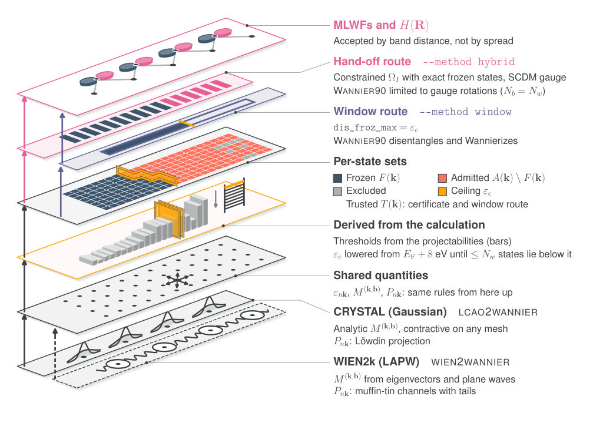
<figcaption class="paper-figure-caption"><b>Fig 1.</b> FIG. 1. The pipeline of both programs, read from the bottom. The two lowest sheets are the frontends. lcao2wannier starts from the real-space matrices H(R) and S(R) of a CRYSTAL calculation and computes the overlaps M (k,b) analytically and orthonormalizes the Bloch states in the same analytic metric, which makes the overlaps contractive on any mesh (Sec. II). wien2wannier starts from WIEN2k LAPW eigenvectors and uses projectabilities from muffin-tin channels extended by inter- stitial tails (Appendix E). From the third sheet up, both programs apply the same rules to the energies εnk, the overlaps and the projectabilities Pnk. On the orange sheet, two thresholds (planes) are read off the...</figcaption>
</figure>
<figure class="paper-figure-card">
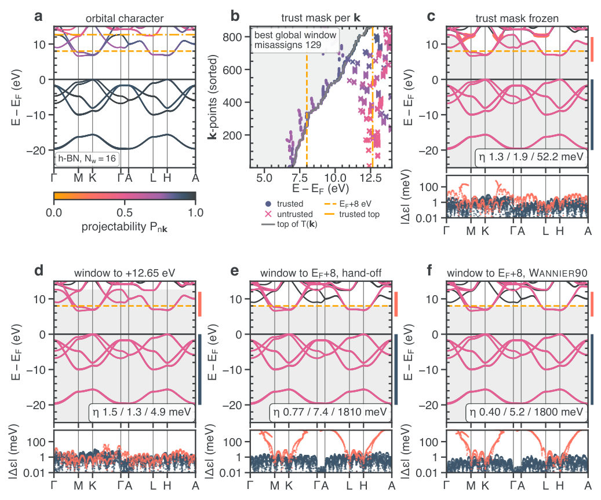
<figcaption class="paper-figure-caption"><b>Fig 2.</b> FIG. 2. Frozen extent and frozen membership on bulk h-BN (16 Wannier functions, 122×6 mesh). (a) DFT bands along the Wannier90 path, colored by their Löwdin projectability Pnk onto the target orbitals. The amber lines mark EF + 8 eV (dashed) and the top of the trusted set at +12.65 eV (dash-dotted). (b) The trust mask of Eq. (9). Each row is a k-point, sorted by the top of its trusted set T(k) (gray line), and each pool state between +4 and +14 eV is drawn at its energy as a dot if trusted and a cross if not, colored by Pnk. Below the top of the trusted set lie 378 untrusted states, and the best single energy window misassigns 129 states. (c)–(f) Models (pink) over the DFT bands (black),...</figcaption>
</figure>
<figure class="paper-figure-card">
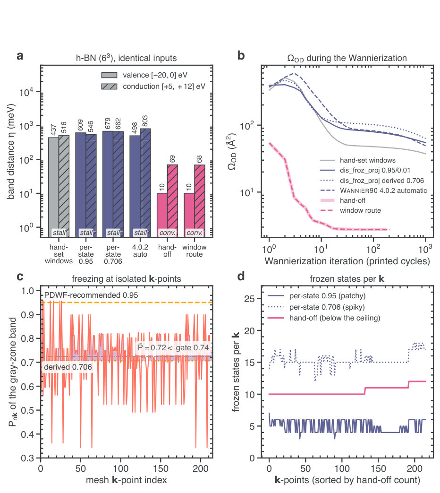
<figcaption class="paper-figure-caption"><b>Fig 3.</b> FIG. 3. Freezing methods on identical h-BN inputs (63 mesh, 16 functions, and the same pool, overlaps and target chemistry). (a) Band distance over the valence window [−20, 0] eV and the conduction window [+5, +12] eV. The four Wannier90 settings are hand-set energy windows, per-state freezing (dis_froz_proj, without a frozen energy window) at the PDWF-recommended 0.95/0.01 (freezing/discard) and at the derived freezing threshold 0.706, and the automatic thresholds of Wannier90 4.0.2 (dis_proj_auto, 0.805/0.180), and all four stall. The two released routes, with the ceiling at the top of the trusted set (+12.65 eV), converge, and the window route starts from the SCDM gauge of the hand-off....</figcaption>
</figure>
<figure class="paper-figure-card">
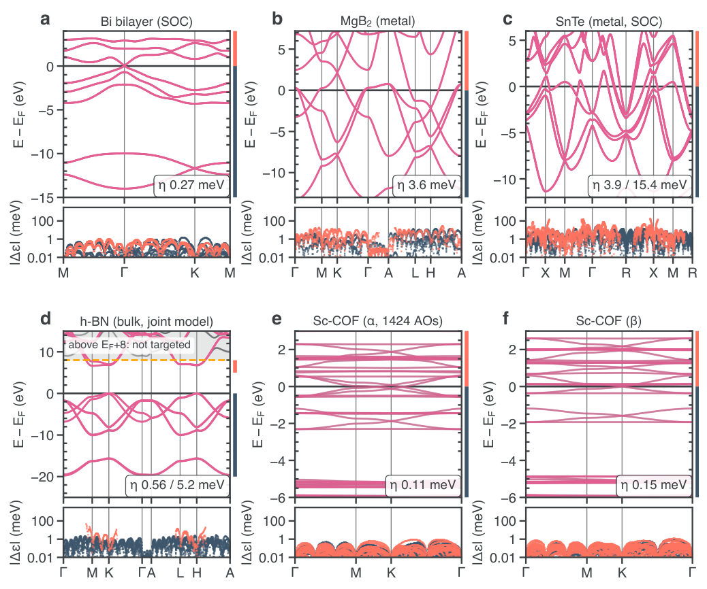
<figcaption class="paper-figure-caption"><b>Fig 4.</b> FIG. 4. The six production runs at the released defaults, (a) the Bi bilayer (SOC, path M–Γ–K–M), (b) MgB2 (metal), (c) SnTe (B2 metal, SOC, with d channels added to the target automatically), (d) bulk h-BN (joint valence-and-conduction model, drawn in gray above EF + 8 eV, which is outside its target range), and (e) and (f) the α and β spin channels of the Sc-COF (1424 AOs). Each panel freezes every pool state below the automatic ceiling, which on SnTe is lowered to EF + 6.18 eV under the X pocket (Fig. 6), and draws the Wannier interpolation (pink) over the LCAO reference (thin gray). Edge bars mark the scoring windows of Table I (slate below EF, coral above), and the box gives the band...</figcaption>
</figure>
<figure class="paper-figure-card">
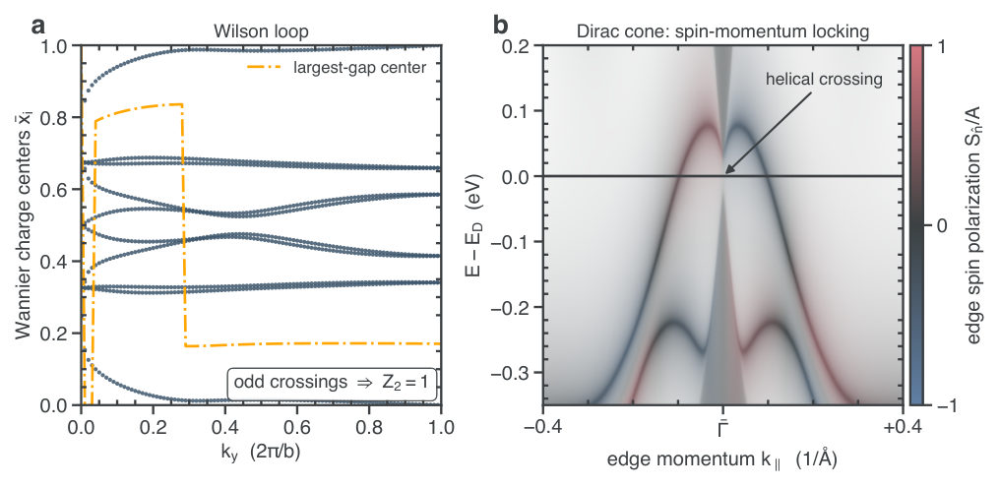
<figcaption class="paper-figure-caption"><b>Fig 5.</b> FIG. 5. Topology of the 16-function Bi bilayer model (band distance 0.27 meV, Table I), computed with WannierTools [80]. (a) Wilson loop of the Wannier charge centers. The largest-gap center (dash-dotted) is crossed an odd number of times, so Z2 = 1. (b) Spin-resolved edge spectral function near the edge Dirac point, from the surface Green’s function [81]. The intensity gives the spectral weight A, and the color gives the edge spin polarization Sˆn/A, where Sˆn is the spectral function projected on spin along ˆn. Energies are relative to ED, the crossing point of the two edge branches in the middle of the 52.8 meV bulk gap. The SM shows the input projectabilities, the edge Fermi points and...</figcaption>
</figure>
</div>

<p><strong>Summary.</strong> This paper introduces a fully automated, systematic workflow for Wannierizing electronic bands in complex materials. It addresses the challenge of defining the correct subspace by balancing energy constraints with state localization metrics like projectability. The method proves robust across different computational frameworks, offering a powerful tool for high-throughput solid-state physics calculations.</p>
<p><strong>Why it may be interesting.</strong> While focused on solid-state theory, the rigorous algorithmic development for defining and optimizing the relevant Hilbert subspace (the frozen manifold) shares conceptual overlap with defining effective Hamiltonians or low-energy subspaces in open quantum systems.</p>
<details>
<summary>Detailed structure</summary>
<p><strong>Main problem.</strong> The core challenge is constructing the frozen manifold for entangled electronic bands, which requires balancing the accurate reproduction of target bands with maintaining enough variational freedom for a well-localized subspace.</p>
<p><strong>Main result.</strong> The workflow demonstrates that freezing all states below a derived energy ceiling is generally superior to methods relying solely on state projectability, significantly reducing band errors across tested materials.</p>
<p><strong>Method.</strong> The authors present a systematic, multi-step workflow involving determining an energy ceiling, measuring state projectability, minimizing the gauge-invariant spread ($\Omega_I$), and finally passing the isolated bands to Wannier90 for localization.</p>
<p><strong>Model / system.</strong> The methods are applied to various condensed matter systems, including bulk h-BN, MgB2, and SnTe, using both WIEN2k (LAPW) and CRYSTAL (LCAO) implementations for high-throughput calculations.</p>
<p><strong>Key observables.</strong> Band Error, Gauge-invariant Spread ($\Omega_I$), Projectability (spectral weight), and the minimum number of misassigned states (Certificate).</p>
<p><strong>Important parameters / regimes.</strong> The energy ceiling ($\epsilon_c$), the target number of Wannier projections, and various thresholds like $\sigma_p=0.5$ are critical parameters.</p>
<p><strong>Assumptions / limitations.</strong> The process assumes an inherent trade-off when setting the energy ceiling, and the method relies on analytic calculations of momentum-shifted overlaps for Gaussian AOs to ensure mathematical consistency.</p>
<p><strong>Figures summary.</strong> Figure 1 illustrates the entire pipeline for both lcao2wannier and wien2wannier, detailing the sequence from frontend calculations through to Wannier90, distinguishing between the 'hand-off' and 'window' routes.</p>
<p><strong>Paper structure.</strong> The paper details the iterative process: first, selecting the minimal set of relevant channels (Algorithm S1); second, determining the energy ceiling ($\epsilon_c$) via an iterative search (Algorithm S2); third, disentangling the subspace by minimizing $\Omega_I$ (Algorithm S3); and finally, constructing the gauge in the AO basis (Algorithm S4).</p>
</details>
<details>
<summary>Abstract</summary>
<p>Constructing the frozen manifold for entangled bands requires balancing exact reproduction of the target bands with sufficient variational freedom to build a well-localized subspace from the broader Bloch pool. We present a workflow that systematically determines the energy ceiling for a target number of selected Wannier projections, freezing every Bloch state below this threshold across the sampled k-mesh. By measuring projectability, the spectral weight of each Bloch state projected onto the target localized basis, the workflow detects missing conduction channels and quantifies discrepancies between orbital character and energy-based freezing. In comparisons where we controlled the extent of the energy ceiling, freezing all sub-ceiling states is generally favored over projectability-based frozen states. Of the seven materials we tested, freezing all sub-ceiling states lowers the band error on four from between 11 meV and 1.2 eV to 18 meV or less, and matches the projectability-based choice to within about 2 meV on the remaining three. In each of the four, projectability-based frozen states give the lower spread, showing that spread alone cannot identify the better model. With the frozen states held fixed, the workflow minimizes the gauge-invariant spread, constructs the gauge from density-matrix columns on atomic orbitals, and passes an isolated set of bands to Wannier90 for localization. The workflow is implemented in two programs for seamless high-throughput Wannierization with WIEN2k (wien2wannier) and CRYSTAL (LCAO2Wannier). Using a single set of calibrated defaults, the CRYSTAL implementation with analytic overlaps produces models that reproduce the reference bands of five cells, from bulk h-BN in a joint valence-and-conduction model to a magnetic framework with 1424 orbitals. The WIEN2k implementation produces eight such models from seven calculations.</p>
</details>
<p><sub><a href="#top">↑ back to top</a></sub></p>

<p><a id="paper-2610.27469"></a></p>
<h3 id="magnetic-field-induced-darkening-of-bright-excitons-in-a-mowsemath1056math-monolayer-alloy"><a href="http://arxiv.org/abs/2610.27469v1">Magnetic-Field-Induced Darkening of Bright Excitons in a MoWSe$_2$ Monolayer Alloy</a></h3>
<p><strong>Authors:</strong> Katarzyna Olkowska-Pucko, Artur O. Slobodeniuk, Mehdi Arfaoui, Elena Blundo, Natalia Zawadzka, Łucja Kipczak, Jan Szpakowski, Diana Vaclavkova, Dipankar Jana, Piotr Kapuściński, Kenji Watanabe, Takashi Taniguchi, Clement Faugeras, Marek Potemski, Adam Babiński, Antonio Polimeni, Maciej R. Molas<br>
<strong>Type:</strong> both · <strong>Category:</strong> other · <strong>PDF:</strong> <a href="https://arxiv.org/pdf/2610.27469v1">https://arxiv.org/pdf/2610.27469v1</a><br>
<strong>Analysis basis:</strong> full PDF text, analyzed in chunks
<strong>Topic relevance:</strong> <code>analog quantum simulation</code> <strong>1/5</strong> · <code>driven-dissipative phase transition</code> <strong>1/5</strong> · <code>quantum measurements</code> <strong>1/5</strong></p>
<div class="figure-strip-hint">↔ Scroll figures horizontally</div>
<div class="paper-figures-scroll">
<figure class="paper-figure-card">
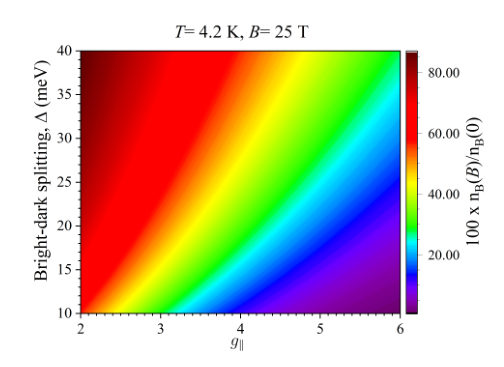
<figcaption class="paper-figure-caption"><b>Fig 1.</b> FIG. 1. False-color map of the calculated normalized bright- exciton population nB(B∥)/nB(0), expressed as a percentage at T = 4.2 K and B∥= 25 T as a function of the bright-dark exciton splitting ∆and the in-plane coupling parameter g∥ using Eq. (9).</figcaption>
</figure>
<figure class="paper-figure-card">
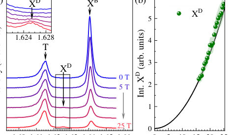
<figcaption class="paper-figure-caption"><b>Fig 2.</b> FIG. 2. (a) Evolution of the low-temperature photolumines- cence spectra of the Mo0.68W0.32Se2 ML measured under an in-plane magnetic field up to 25 T. The excitation energy and laser power were 2.41 eV and 10 µW, respectively. (b) Inte- grated intensity of the XD line as a function of B∥, together with the quadratic fit described in the text. The shaded area represents the uncertainty of the extracted integrated inten- sity.</figcaption>
</figure>
<figure class="paper-figure-card">
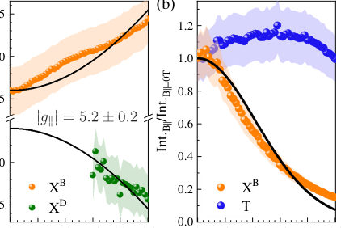
<figcaption class="paper-figure-caption"><b>Fig 3.</b> FIG. 3. (a) Energies of the bright XB and dark XD exci- tons as a function of the in-plane magnetic field B∥. The solid lines are fits based on the bright-dark exciton mixing model described by Eq. (10). The fit was performed over the full available field range for XB, 0-25 T, and over the range where XD is resolved, 15-25 T. The shaded areas indicate the uncertainties of the extracted exciton energies. (b) Magnetic- field dependence of the integrated intensities of the XB and T emission lines, normalized to their zero-field values. The shaded areas indicate the uncertainties of the extracted inte- grated intensities. The solid line shows the population model described by Eq. (9).</figcaption>
</figure>
</div>

<p><strong>Summary.</strong> This study reports on the magnetic-field-induced darkening of bright excitons in $ ext{Mo}<em 0.32>{0.68}  ext{W}</em>_2$. By applying an in-plane magnetic field, the bright exciton emission is suppressed by about 85% while a dark exciton state is activated. The findings confirm that alloying is key to enhancing this magnetic control mechanism, offering a general route for manipulating exciton populations.}   ext{Se</p>
<p><strong>Why it may be interesting.</strong> This work provides a clear, tunable mechanism for controlling exciton populations using external fields, which is highly relevant for designing quantum emitters and optical switches in 2D materials.</p>
<details>
<summary>Detailed structure</summary>
<p><strong>Main problem.</strong> The study investigates the inverse effect of magnetic fields on excitons: the magnetic-field-induced darkening (quenching) of an optically bright exciton, complementing the known brightening of dark excitons.</p>
<p><strong>Main result.</strong> The research demonstrates that applying an in-plane magnetic field up to 25 T causes an 85% suppression of bright exciton emission while simultaneously activating a dark exciton line in the $    ext{Mo}<em 0.32>{0.68}  ext{W}</em>_2$ alloy.}   ext{Se</p>
<p><strong>Method.</strong> The work combines low-temperature photoluminescence (PL) spectroscopy with theoretical modeling using a k.p approach and a bright-dark exciton mixing Hamiltonian.</p>
<p><strong>Model / system.</strong> The physical system is the $    ext{Mo}<em 0.32>{0.68}  ext{W}</em>_2$ monolayer alloy. The theoretical framework uses a coupled bright-dark exciton mixing model, whose energy and population dynamics are governed by the magnetic field via the Zeeman interaction.}   ext{Se</p>
<p><strong>Key observables.</strong> Bright-dark splitting ($\Delta$), the magnitude of bright exciton suppression ($\approx 85\%$), and the effective in-plane g factor ($|g_{\parallel}| = 5.2 \pm 0.2$).</p>
<p><strong>Important parameters / regimes.</strong> Temperature (4.2 K), Magnetic Field ($B_{\parallel}$ up to 25 T), and the alloy composition ($ ext{Mo}<em 0.32>{0.68}  ext{W}</em>_2$).}   ext{Se</p>
<p><strong>Assumptions / limitations.</strong> The analysis assumes thermal equilibrium and that the alloying brings the system near the bright-dark crossover, enhancing magnetic coupling effects.</p>
<p><strong>Figures summary.</strong> Figures show the PL spectra evolution, the quadratic increase of the dark exciton intensity with $B_{\parallel}$, and theoretical fits demonstrating the energy shifts and population quenching based on the mixing model.</p>
<p><strong>Paper structure.</strong> The paper establishes the problem by contrasting bright/dark exciton behavior, develops a k.p model for coupled energy/intensity evolution, presents experimental PL measurements showing quenching and activation, and concludes by attributing the effect to alloy-enhanced magnetic coupling.</p>
</details>
<details>
<summary>Abstract</summary>
<p>Magnetic fields are widely used to brighten spin-forbidden dark excitons, but the inverse effect on an optically bright exciton has remained largely unexplored. We demonstrate the complementary phenomenon of magnetic-field-induced darkening of a bright exciton in Mo$_{0.68}$W$_{0.32}$Se$_2$. At 4.2 K, an in-plane magnetic field up to 25 T activates a dark-exciton line 14.2$\pm$1.3 meV below the bright exciton while suppressing the bright-exciton emission by about 85\%. A bright-dark mixing model quantitatively captures the coupled energy and intensity evolution with an effective in-plane $g$ factor of $|g_{\parallel}|=5.2\pm0.2$. Alloying is crucial to the effect, as it brings the system close to the bright-dark crossover, where a small bright-dark splitting is combined with unusually strong in-plane magnetic coupling. This places the system in a regime where field-induced level repulsion raises the bright-like branch and strongly depletes its thermal population. These results identify a general route to magnetic control of exciton populations through engineering of the bright-dark hierarchy.</p>
</details>
<p><sub><a href="#top">↑ back to top</a></sub></p>

<p><a id="paper-2610.27718"></a></p>
<h3 id="non-uniform-grids-to-accelerate-electron-phonon-coupling-calculations-for-superconductivity"><a href="http://arxiv.org/abs/2610.27718v1">Non-uniform grids to accelerate electron-phonon coupling calculations for superconductivity</a></h3>
<p><strong>Authors:</strong> Kang Wang, Siyu Chen, Sun-Woo Kim, Kieran Bozier, Chris Pickard, Bartomeu Monserrat<br>
<strong>Type:</strong> theory · <strong>Category:</strong> numerical methods · <strong>PDF:</strong> <a href="https://arxiv.org/pdf/2610.27718v1">https://arxiv.org/pdf/2610.27718v1</a><br>
<strong>Analysis basis:</strong> full PDF text, analyzed in chunks
<strong>Topic relevance:</strong> <code>Keldysh / 2PI / non-Gaussian methods</code> <strong>1/5</strong> · <code>analog quantum simulation</code> <strong>1/5</strong> · <code>methods for driven-dissipative</code> <strong>1/5</strong></p>
<div class="figure-strip-hint">↔ Scroll figures horizontally</div>
<div class="paper-figures-scroll">
<figure class="paper-figure-card">
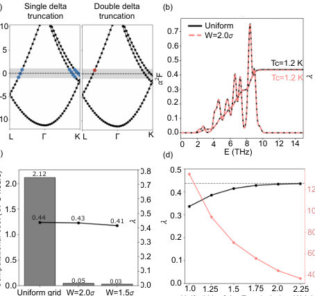
<figcaption class="paper-figure-caption"><b>Fig 1.</b> Figure 1. (a) Calculated band structure of aluminium with the Fermi level set to zero and the Fermi window indicated in grey. The left panel shows the k points selected by the single delta truncation ΘW (ϵnk) = 1 (blue dots). The right panel illustrates the additional filtering imposed by the double delta truncation ΘW (ϵnk)ΘW (ϵmk+q) = 1. For visual clarity, the shaded Fermi window is set to W = 1 eV in this illustration while in the calculations we use W = 100 meV. (b) Com- parison of the Eliashberg spectral function α2F and the e-ph coupling constant λ computed using a full dense uniform k- point grid (84×84×84, solid black lines) and the double delta truncated method (dashed red lines)....</figcaption>
</figure>
<figure class="paper-figure-card">
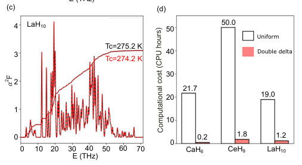
<figcaption class="paper-figure-caption"><b>Fig 2.</b> Figure 2. The calculated Eliashberg spectral function for hy- drides (a) CaH6, (b) CeH9 and (c) LaH10. (d) The com- putational cost of using a uniform grid and a double delta truncation for each system.</figcaption>
</figure>
<figure class="paper-figure-card">
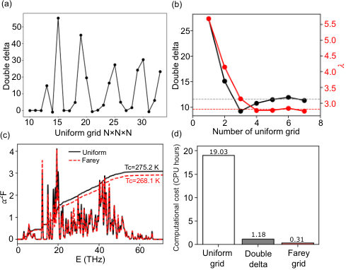
<figcaption class="paper-figure-caption"><b>Fig 3.</b> Figure 3. (a) Double delta values computed for LaH10 using various uniform k-point grids. (b) Double delta values (black) and corresponding e-ph coupling constants λ (red) computed using Farey grids formed by combining neighboring uniform grids. Reference results (dashed lines) are obtained using a uniform grid of size 48×48×48. (c) Eliashberg spectral func- tion α2F and λ for LaH10 computed using a dense uniform grid and a Farey grid. (d) Computational cost comparison between a uniform grid, a double delta truncation on a uni- form grid and a Farey grid.</figcaption>
</figure>
<figure class="paper-figure-card">
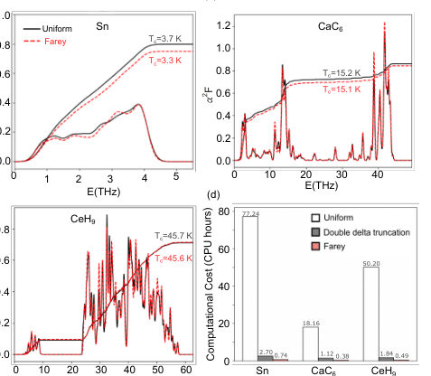
<figcaption class="paper-figure-caption"><b>Fig 4.</b> Figure 4. Comparison of the calculated Eliashberg spectral function α2F and λ for (a) Sn, (b) CaC6 and (c) CeH9 using a dense uniform grid (black) and a Farey grid (red). (d) The computational cost comparison in these three systems using a uniform grid, a double delta truncation on a uniform grid and a Farey grid.</figcaption>
</figure>
<figure class="paper-figure-card">
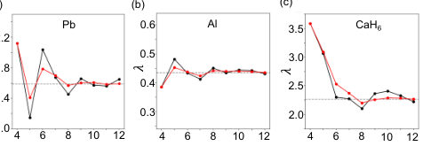
<figcaption class="paper-figure-caption"><b>Fig 5.</b> Figure 5. The calculated electron phonon coupling strength λ using uniform grid (black) and Farey grid (red) for (a) Pb, (b) Al and (c) CaH6. The x axis for a uniform grid represents its grid size while for a Farey grid, it represents a combination of previous uniform grids starting from the 4 × 4 × 4 grid.</figcaption>
</figure>
</div>

<p><strong>Summary.</strong> This paper presents a novel, highly efficient computational framework to calculate electron-phonon coupling for superconductivity. It combines double delta truncation with non-uniform Farey grids to drastically reduce the computational cost associated with dense Brillouin zone sampling. This breakthrough makes accurate, large-scale predictions of superconductivity in complex quantum materials feasible.</p>
<p><strong>Why it may be interesting.</strong> While focused on solid-state physics, the core contribution is a highly scalable and accurate numerical technique for integrating complex many-body integrals over momentum space, which has analogues in other quantum simulation domains.</p>
<details>
<summary>Detailed structure</summary>
<p><strong>Main problem.</strong> Evaluating electron-phonon interactions for superconductivity is computationally bottlenecked by the dense Brillouin zone sampling required for accurate calculations.</p>
<p><strong>Main result.</strong> The combined methodology reduces computational cost by up to two orders of magnitude while maintaining high accuracy, yielding $T_c$ predictions within 5% of full-grid benchmarks.</p>
<p><strong>Method.</strong> The authors combine a double delta truncation scheme to restrict integration near the Fermi level with non-uniform Farey grids to dynamically resolve sampling errors in both $\mathbf{k}$ and $\mathbf{q}$ space.</p>
<p><strong>Model / system.</strong> The study applies to calculating superconducting properties in various quantum materials, including elemental aluminum and several high-pressure hydrides ($    ext{CaH}<em 10>6$, $  ext{LaH}</em>$).</p>
<p><strong>Key observables.</strong> Electron-phonon coupling constant ($\lambda$), Eliashberg spectral function ($\alpha^2F(\omega)$), and superconducting critical temperature ($T_c$).</p>
<p><strong>Important parameters / regimes.</strong> Fermi window width ($W$), Brillouin zone sampling density, and momentum transfer ($\mathbf{q}$).</p>
<p><strong>Assumptions / limitations.</strong> The method relies on the adiabatic approximation and assumes that the double delta truncation introduces a manageable, tunable underestimation of $\lambda$ that improves with increasing $W$.</p>
<p><strong>Figures summary.</strong> Figures compare $\lambda$ and $\alpha^2F$ calculated using the new method versus full uniform grids, demonstrating excellent agreement alongside dramatic reductions in computational time.</p>
<p><strong>Paper structure.</strong> The paper introduces the computational bottleneck, details the double delta truncation and Farey grid approach, applies it to various materials (Al, hydrides), and concludes by summarizing the efficient workflow combining both techniques.</p>
</details>
<details>
<summary>Abstract</summary>
<p>Efficient and accurate evaluation of electron-phonon interactions is essential for predictive superconductivity calculations, but dense Brillouin zone sampling requirements pose a major computational bottleneck. To overcome this, we introduce an accelerated, highly scalable framework that combines a double delta truncation scheme with non-uniform Farey grids in both $\mathbf{k}$ and $\mathbf{q}$ space. The truncation strategy significantly reduces computational cost by restricting integration to states satisfying energy constraints near the Fermi level, while the Farey grids dynamically resolve sampling errors from localized scattering and stabilize convergence. Applied to elemental aluminium and several high-pressure hydrides, this combined methodology reduces computational cost by up to two orders of magnitude and yields electron-phonon coupling constants and superconducting critical temperatures Tc typically within about 5% of full-grid benchmarks. This approach overcomes sampling bottlenecks associated with dense uniform grids, making accurate, low-cost predictions of superconductivity in complex quantum materials feasible.</p>
</details>
<p><sub><a href="#top">↑ back to top</a></sub></p>

<p><a id="paper-2610.27235"></a></p>
<h3 id="does-a-flux-defined-markov-blanket-screen-self-replicating-gray-scott-spots-a-computational-test-of-a-blanket-condition-from-the-free-energy-principle"><a href="http://arxiv.org/abs/2610.27235v1">Does a Flux-Defined Markov Blanket Screen Self-Replicating Gray--Scott Spots? A Computational Test of a Blanket Condition from the Free Energy Principle</a></h3>
<p><strong>Authors:</strong> John E Pearson<br>
<strong>Type:</strong> theory · <strong>Category:</strong> statistical mechanics · <strong>PDF:</strong> <a href="https://arxiv.org/pdf/2610.27235v1">https://arxiv.org/pdf/2610.27235v1</a><br>
<strong>Analysis basis:</strong> full PDF text, analyzed in chunks
<strong>Topic relevance:</strong> <code>driven-dissipative phase transition</code> <strong>1/5</strong> · <code>non-equilibrium universality</code> <strong>1/5</strong></p>
<div class="figure-strip-hint">↔ Scroll figures horizontally</div>
<div class="paper-figures-scroll">
<figure class="paper-figure-card">
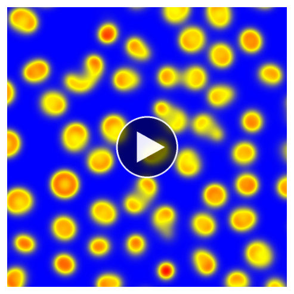
<figcaption class="paper-figure-caption"><b>Fig 1.</b> Figure 1: Activator field 𝑣in the chaotic, spot-splitting regime studied here (1024 × 1024): round spots, elongated organisms mid-division, and competitive packing. The image is a still frame from a movie of the simulation; click the image to play the movie in a web browser.</figcaption>
</figure>
<figure class="paper-figure-card">
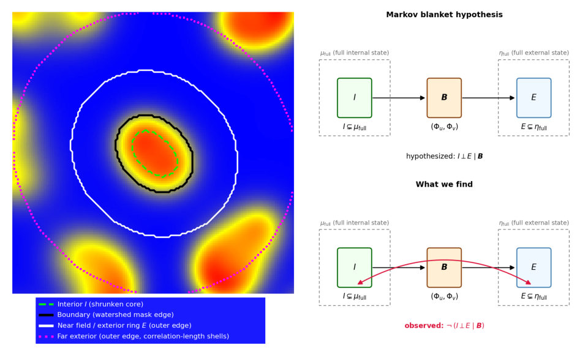
<figcaption class="paper-figure-caption"><b>Fig 2.</b> Figure 2: Left: the test on a field snapshot: organism boundary (black), shrunken interior 𝐼 (green, dashed), outer edge of the exterior ring 𝐸(white), and outer edge of the far exterior used in Section 3.4 (magenta, dotted). Right: the abstract structure. 𝐼and 𝐸are low-dimensional summaries of the full internal and external states, so a failure of screening between them does not by itself show that no partition of the full state space would screen. A blanket requires that conditioning on 𝐵renders 𝐼and 𝐸independent (top); we find a persistent dependence (bottom).</figcaption>
</figure>
<figure class="paper-figure-card">
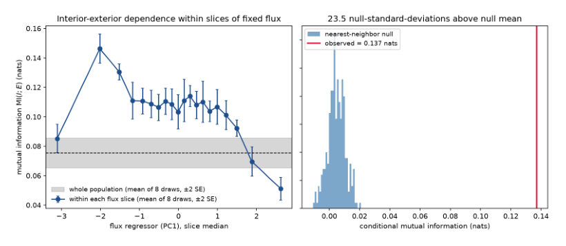
<figcaption class="paper-figure-caption"><b>Fig 3.</b> Figure 3: Nonlinear interior–exterior dependence in the independent ensemble (𝑁= 566,967). Left: MI(𝐼; 𝐸) inside each of 20 equal-count slices of flux (PC1), against the whole population (grey band). Right: observed CMI on an 𝑁= 8000 subsample (red line) against the nearest- neighbor conditional null (blue), 23.5 null SDs above its mean.</figcaption>
</figure>
<figure class="paper-figure-card">
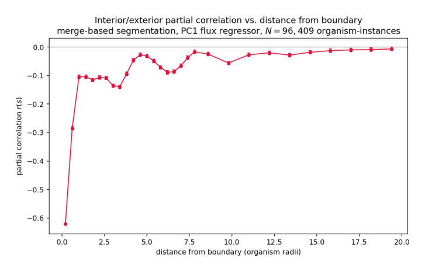
<figcaption class="paper-figure-caption"><b>Fig 4.</b> Figure 4: Partial correlation (PC1 flux regressor) between interior and exterior state as a function of distance from the organism’s boundary in organism radii (𝑁= 96,409; error bars 95% CI).</figcaption>
</figure>
<figure class="paper-figure-card">
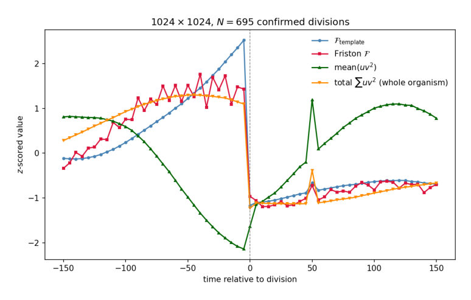
<figcaption class="paper-figure-caption"><b>Fig 5.</b> Figure 5: Free energies and reaction rate aligned to division and averaged over 𝑁= 695 confirmed divisions, each 𝑧-scored. Template-deviation and Friston free energy track closely (𝑟= 0.934). The per-area mean of 𝑢𝑣2 runs opposite; the total of 𝑢𝑣2 follows them but is set mainly by size.</figcaption>
</figure>
</div>

<p><strong>Summary.</strong> This paper applies the Free Energy Principle to test if self-replicating chemical spots in the Gray-Scott model possess a Markov blanket. Using information theory, the authors find that the flux across the boundary does not render the internal and external states statistically independent. This suggests that the simple, boundary-defined assumption of local inference fails for this nonlinear pattern-forming system.</p>
<p><strong>Why it may be interesting.</strong> While the system is classical, the rigorous application of information theory (FEP) to pattern formation provides a framework for understanding emergent boundaries and local causal structure in complex, non-equilibrium physical systems, which has parallels in open quantum systems.</p>
<details>
<summary>Detailed structure</summary>
<p><strong>Main problem.</strong> The paper tests the Markov blanket condition, derived from the Free Energy Principle, to determine if self-replicating structures in a nonlinear reaction-diffusion system can be treated as statistically independent from their environment given boundary information.</p>
<p><strong>Main result.</strong> The conditional-independence property of a Markov blanket fails for the flux-defined partition in the Gray-Scott spots, indicating that the system does not satisfy the necessary statistical criteria for simple inference based on boundary fluxes.</p>
<p><strong>Method.</strong> The authors used information-theoretic measures, specifically Conditional Mutual Information (CMI), to test for conditional independence between the internal and external states of the spots, conditioned on the diffusive flux across the boundary.</p>
<p><strong>Model / system.</strong> The study uses the Gray-Scott reaction-diffusion model, which describes self-replicating, nonlinear chemical patterns (spots). The analysis focuses on partitioning the system into an internal 'organism' state and an external environment.</p>
<p><strong>Key observables.</strong> Conditional Mutual Information (CMI), diffusive flux ($\Phi_u, \Phi_v$), and the correlation between the computed Free Energy and a simple descriptive proxy.</p>
<p><strong>Important parameters / regimes.</strong> Chaotic replicating regime parameters ($D_u= 2 	imes 10^{-5}, D_v= 10^{-5}, F= 0.018, k= 0.055$), and the timescale separation ratio $
ho$.</p>
<p><strong>Assumptions / limitations.</strong> The analysis relies on low-dimensional summaries of the field states, and the initial guarantee of the FEP requires unverified assumptions about the mask definition.</p>
<p><strong>Figures summary.</strong> Figures illustrate the setup showing the organism boundary, and the results quantify the failure of conditional independence using CMI values.</p>
<p><strong>Paper structure.</strong> The paper introduces the FEP and the Markov blanket concept, applies it to the Gray-Scott model, performs multiple tests (linear correlation, nonlinear CMI) using flux and boundary concentrations, and concludes by discussing the implications of the failure.</p>
</details>
<details>
<summary>Abstract</summary>
<p>Friston's free energy principle holds that a system separated from its environment by a Markov blanket---a boundary whose states statistically screen its interior from its exterior---can be treated as performing approximate Bayesian inference, and that such blankets arise wherever coupling is short-range. We test this blanket condition in a concrete nonlinear pattern-forming system: self-replicating spots in a reaction-diffusion model that persist, compete, and reproduce. Directed boundary exchange and timescale separation hold up reasonably well, with qualifications. A flux-defined blanket does not screen interior from exterior. Flux removes only part of the linear dependence, and a nonlinear test shows that conditioning on flux \emph{increases} the dependence, consistent with conditioning on a collider, since flux is a joint function of concentrations on both sides of the boundary. The dependence is concentrated within about one organism radius of the boundary. A band of the surrounding field that thick screens the interior from the exterior beyond it, as any short-range field would, which is not evidence of inference.</p>
</details>
<p><sub><a href="#top">↑ back to top</a></sub></p>

<p><a id="paper-2610.27849"></a></p>
<h3 id="on-the-origin-of-nonreciprocal-charge-transport-in-topological-insulator-bisbtese2"><a href="http://arxiv.org/abs/2610.27849v1">On the origin of nonreciprocal charge transport in topological insulator BiSbTeSe2</a></h3>
<p><strong>Authors:</strong> Fengyi Guo, Ziqi Wang, Xiubing Li, Zheng Dai, Congcong Li, Yufan Ju, Shuai Zhang, Bin Cheng, Zhe Ying, Fengqi Song<br>
<strong>Type:</strong> experiment · <strong>Category:</strong> other · <strong>PDF:</strong> <a href="https://arxiv.org/pdf/2610.27849v1">https://arxiv.org/pdf/2610.27849v1</a><br>
<strong>Analysis basis:</strong> full PDF text, analyzed in chunks
<strong>Topic relevance:</strong> <code>Keldysh / 2PI / non-Gaussian methods</code> <strong>1/5</strong> · <code>analog quantum simulation</code> <strong>1/5</strong></p>
<div class="figure-strip-hint">↔ Scroll figures horizontally</div>
<div class="paper-figures-scroll">
<figure class="paper-figure-card">
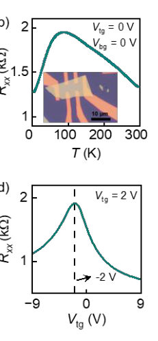
<figcaption class="paper-figure-caption"><b>Fig 1.</b> FIG. 1. (a) The structure of the dual-gated BSTS device. Si/SiO2 and graphite/h-BN work as back</figcaption>
</figure>
<figure class="paper-figure-card">
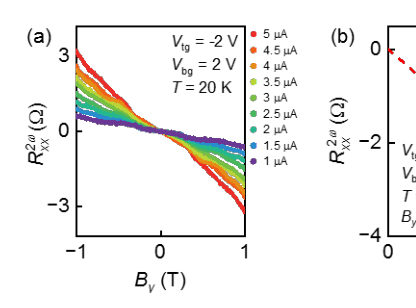
<figcaption class="paper-figure-caption"><b>Fig 2.</b> FIG. 2. (a) Magnetic field dependence of Rxx</figcaption>
</figure>
<figure class="paper-figure-card">
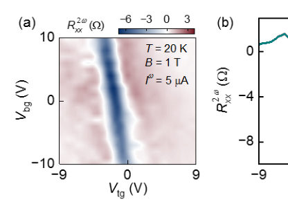
<figcaption class="paper-figure-caption"><b>Fig 3.</b> FIG. 3. (a) The antisymmetrized dual-gate mapping of nonreciprocal resistance Rxx</figcaption>
</figure>
<figure class="paper-figure-card">
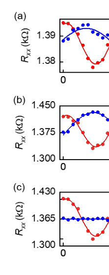
<figcaption class="paper-figure-caption"><b>Fig 4.</b> Fig. 4. (a) Angular dependent longitudinal resistance 𝑅𝑥𝑥 (red) and nonreciprocal resistance 𝑅𝑥𝑥</figcaption>
</figure>
<figure class="paper-figure-card">
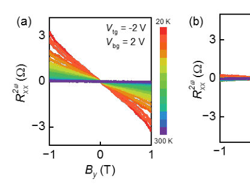
<figcaption class="paper-figure-caption"><b>Fig 5.</b> FIG. 5. (a) Magnetic-field dependence of the nonreciprocal resistance Rxx</figcaption>
</figure>
</div>

<p><strong>Summary.</strong> This work reports on highly tunable nonreciprocal charge transport in $    ext{BiSbTeSe}_2$ topological insulators using a dual-gated device. The nonreciprocal signal is maximized near the charge neutrality point and is attributed to spin-momentum locking inhomogeneities in the surface states. The findings highlight $    ext{BiSbTeSe}_2$ as a promising platform for room-temperature nonlinear electronics.</p>
<p><strong>Why it may be interesting.</strong> While focused on condensed matter transport, the study of non-linear, direction-dependent transport phenomena in topological materials touches upon concepts of broken symmetries and chiral dynamics that are relevant to advanced quantum device physics.</p>
<details>
<summary>Detailed structure</summary>
<p><strong>Main problem.</strong> The study investigates the origin and control of nonreciprocal charge transport (NCT) in topological insulators, specifically focusing on the dependence of transport on direction and gate voltage.</p>
<p><strong>Main result.</strong> The nonreciprocal response is strongly enhanced near the charge neutrality point and is attributed to scattering mechanisms arising from the inhomogeneity of spin-momentum locking within the topological surface states.</p>
<p><strong>Method.</strong> Transport measurements were performed using dual-gated $    ext{BiSbTeSe}_2$ devices, measuring the second-harmonic longitudinal resistance ($R_{xx}^{2\omega}$) while varying gate voltages, magnetic fields, and temperature.</p>
<p><strong>Model / system.</strong> The physical system is a dual-gated $   ext{BiSbTeSe}_2$ topological insulator flake, which hosts topologically protected surface states (TSSs). The analysis decomposes the total nonreciprocal response into contributions from the top and bottom surfaces.</p>
<p><strong>Key observables.</strong> Nonreciprocal resistance ($R_{xx}^{2\omega}$), nonreciprocal coefficient ($\gamma$), and the dependence of these quantities on gate voltages ($V_{tg}, V_{bg}$), magnetic field ($B$), and temperature ($T$).</p>
<p><strong>Important parameters / regimes.</strong> The maximum nonreciprocal response is observed near the charge neutrality point (CNP); the response remains robust up to 300 K.</p>
<p><strong>Assumptions / limitations.</strong> The nonreciprocal response is highly sensitive to the imbalance between the top and bottom surface contributions, and the mechanism is linked to inhomogeneous spin-momentum locking.</p>
<p><strong>Figures summary.</strong> Figures map the gate-dependent nonreciprocal resistance, show linear dependence on current and magnetic field, and illustrate the angular dependence of the response, confirming the CNP maximum.</p>
<p><strong>Paper structure.</strong> The paper systematically presents measurements showing the gate-tunability of NCT, analyzes its dependence on magnetic field and temperature, and finally attributes the observed behavior to specific scattering mechanisms within the TSSs.</p>
</details>
<details>
<summary>Abstract</summary>
<p>Nonreciprocal charge transport provides an effective approach for probing direction dependent charge dynamics and spin-momentum-locked electronic states. Here, we report highly gate-tunable nonreciprocal charge transport in dual-gated BiSbTeSe2 topological insulator device. The second-harmonic longitudinal resistance is linear in both current and magnetic field. The nonreciprocal response reaches its maximum near the charge neutrality point, exhibits sign reversals on either side, and is strongly suppressed once the Fermi level enters the bulk states. We suggest that the nonreciprocal response is attributed to the inhomogeneity of spin-momentum locking in the topological surface states. The nonreciprocal signal near the charge neutrality point is about one order of magnitude larger than that without gate modulation and remains robust up to 300 K, highlighting BiSbTeSe2 as a promising platform for room-temperature nonlinear electronics.</p>
</details>
<p><sub><a href="#top">↑ back to top</a></sub></p>

<p><a id="paper-2610.27499"></a></p>
<h3 id="rashba-controlled-emergence-and-reversal-of-critical-field-anisotropy-in-p-wave-magnet-superconductor-hybrids"><a href="http://arxiv.org/abs/2610.27499v1">Rashba-controlled emergence and reversal of critical-field anisotropy in p-wave magnet--superconductor hybrids</a></h3>
<p><strong>Authors:</strong> Rui-Xiang Cheng, Zhao Gong, Dong-Hui Xu, Chui-Zhen Chen<br>
<strong>Type:</strong> theory · <strong>Category:</strong> other · <strong>PDF:</strong> <a href="https://arxiv.org/pdf/2610.27499v1">https://arxiv.org/pdf/2610.27499v1</a><br>
<strong>Analysis basis:</strong> full PDF text, analyzed in chunks
<strong>Topic relevance:</strong> <code>Keldysh / 2PI / non-Gaussian methods</code> <strong>1/5</strong> · <code>analog quantum simulation</code> <strong>1/5</strong></p>
<div class="figure-strip-hint">↔ Scroll figures horizontally</div>
<div class="paper-figures-scroll">
<figure class="paper-figure-card">
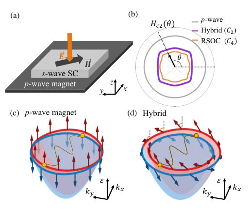
<figcaption class="paper-figure-caption"><b>Fig 1.</b> FIG. 1. Rashba-induced anisotropy in a p-wave-magnet and super- conductor heterostructure. (a) Conceptual device architecture: a 2D s-wave superconductor proximity-coupled to a p-wave magnet. The perpendicular electric-field arrow represents a possible gate-induced change of the confinement asymmetry and effective Rashba cou- pling, rather than an assumed universal relation VR ∝Ez. An in- plane magnetic field H probes the superconducting response; see Sec. III E. (b) Polar plot of the uniform-sector paramagnetic critical field Hc2(θ). The p-wave proximity effect alone yields an isotropic response (gray circle), whereas the Rashba-only case exhibits a C4 response in the model considered...</figcaption>
</figure>
<figure class="paper-figure-card">
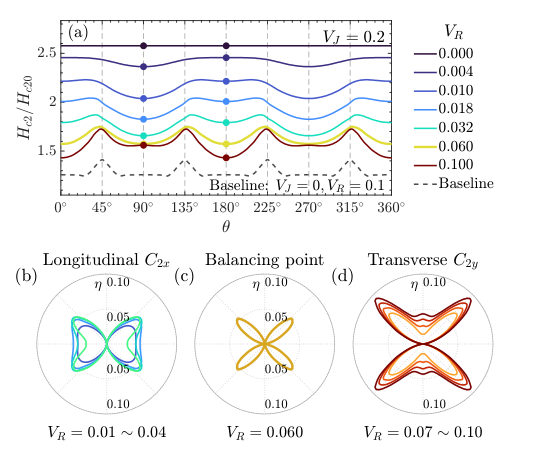
<figcaption class="paper-figure-caption"><b>Fig 2.</b> FIG. 2. Rashba-driven crossover from longitudinal to transverse critical-field anisotropy. (a) Angular dependence of the normalized in-plane critical field Hc2/Hc20 at fixed p-wave exchange VJ = 0.2 for different Rashba SOC strengths VR. Solid dots mark Hc2x and Hc2y, highlighting the reversal of their relative magnitudes as VR in- creases. The gray dashed curve shows the Rashba-only case (VJ = 0, VR = 0.1). (b)-(d) Polar plots of the normalized angular variation η(θ) for three representative regimes. Increasing VR drives a con- tinuous reversal of the principal-axis contrast from (b) a longitudi- nal C2x anisotropy to (d) a transverse C2y anisotropy. This evolu- tion passes through (c) an...</figcaption>
</figure>
<figure class="paper-figure-card">
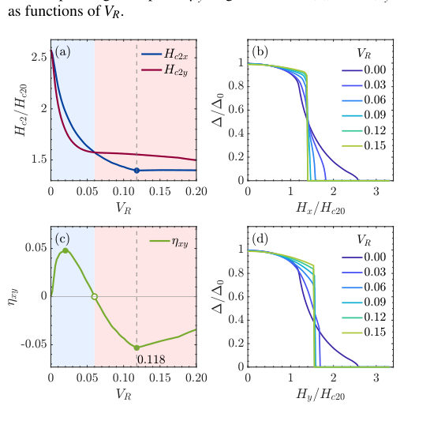
<figcaption class="paper-figure-caption"><b>Fig 3.</b> FIG. 3. Critical-field anisotropy and direction-dependent super- conducting transitions. (a) Normalized critical fields Hc2x, Hc2y and (c) the corresponding principal-axis contrast ηxy = (Hc2x − Hc2y)/(Hc2x + Hc2y) versus Rashba SOC strength VR at VJ = 0.2. Background shading delineates the longitudinal C2x (blue) and trans- verse C2y (red) response regimes, separated by the accidental com- pensation point. A visible change in slope occurs near VR ≈0.118. (b),(d) Superconducting order parameter ∆versus normalized in- plane magnetic field along x and y, respectively. The profiles re- veal direction-dependent continuous suppression and discontinuous collapse of ∆switching discontinuously from...</figcaption>
</figure>
<figure class="paper-figure-card">
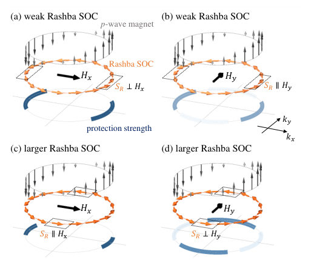
<figcaption class="paper-figure-caption"><b>Fig 4.</b> FIG. 4. Schematic illustration of Rashba-induced redistribution of p- wave magnetic protection. The three layers display the p-wave spin- splitting field (top), the Rashba field SR and applied in-plane Zeeman field H (middle), and the qualitative distribution of protection against Zeeman depairing (bottom). (a), (b) Weak and (c), (d) larger Rashba SOC, with H ∥ˆx in (a), (c) and H ∥ˆy in (b), (d). Dashed boxes high- light selected regions near the kx axis, where the exchange provides spin-locking protection, and near the ky axis, where the exchange vanishes. Rashba components parallel to H weaken the transverse character of the combined spin locking, whereas perpendicular com- ponents can...</figcaption>
</figure>
<figure class="paper-figure-card">
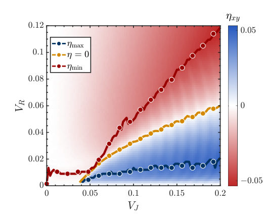
<figcaption class="paper-figure-caption"><b>Fig 5.</b> FIG. 5. Critical-field anisotropy in the VJ–VR plane for the uni- form superconducting state. The color map shows ηxy = (Hc2x − Hc2y)/(Hc2x+Hc2y). The golden curve marks the compensation con- tour ηxy = 0, separating the blue region with Hc2x &gt; Hc2y from the red region with Hc2y &gt; Hc2x. The dark-blue and the dark-red curves trace the maximum (ηmax) and minimum (ηmin) values of ηxy as VR varies at fixed VJ. All three curves use circular markers. Equal principal- axis fields on the compensation contour can coexist with residual angular anisotropy. This is a response map, not a phase diagram of distinct pairing symmetries.</figcaption>
</figure>
</div>

<p><strong>Summary.</strong> This theoretical work explores how Rashba spin-orbit coupling controls the magnetic field anisotropy in superconductor/magnet hybrids. By tuning the SOC, the paper shows that the direction most susceptible to magnetic depairing can be engineered to reverse by $90^\circ$. This mechanism suggests a pathway for electrically controlling the superconducting response without altering the underlying magnetic texture.</p>
<p><strong>Why it may be interesting.</strong> The ability to tune the superconducting response anisotropy via an external electric field (controlling Rashba SOC) is highly relevant for engineering superconducting spintronic devices and understanding topological superconductivity.</p>
<details>
<summary>Detailed structure</summary>
<p><strong>Main problem.</strong> The study investigates how tuning Rashba spin-orbit coupling (SOC) can control the directionality of the critical magnetic field ($H_{c2}$) that depairs an s-wave superconductor within a p-wave magnet hybrid.</p>
<p><strong>Main result.</strong> Increasing Rashba coupling first generates, and then reverses, the principal-axis critical-field anisotropy, switching the minimum-critical-field direction by $90^\circ$. This reversal allows for gate control of the easy-depairing axis.</p>
<p><strong>Method.</strong> The analysis involves minimizing the Bogoliubov–de Gennes (BdG) grand potential over uniform pairing amplitudes to determine the thermodynamically stable superconducting state.</p>
<p><strong>Model / system.</strong> The system is a two-dimensional s-wave superconductor proximity-coupled to a p-wave magnet, modeled using an effective tight-binding Hamiltonian incorporating kinetic, p-wave exchange ($h_J$), Rashba SOC ($h_R$), and Zeeman terms ($h_Z$).</p>
<p><strong>Key observables.</strong> Critical-field anisotropy ($H_{c2}(	heta)$), principal-axis critical-field contrast ($\eta_{xy}$), and the direction of minimum-critical-field susceptibility.</p>
<p><strong>Important parameters / regimes.</strong> Rashba SOC strength ($V_R$), p-wave exchange strength ($V_J$), and the magnetic field orientation ($  heta$).</p>
<p><strong>Assumptions / limitations.</strong> The analysis is restricted to the uniform pairing sector ($q=0$) and neglects orbital depairing effects.</p>
<p><strong>Figures summary.</strong> Figures illustrate the conceptual device architecture, the transition from isotropic to $C_2$ anisotropy, and the quantitative reversal of the principal-axis contrast as a function of Rashba coupling strength.</p>
<p><strong>Paper structure.</strong> The paper systematically analyzes the superconducting state by first establishing the Hamiltonian, then calculating the critical field anisotropy in the pure p-wave limit, and finally demonstrating the tunable reversal of this anisotropy by introducing and varying the Rashba SOC coupling strength.</p>
</details>
<details>
<summary>Abstract</summary>
<p>We show that tuning Rashba spin-orbit coupling can change the in-plane field direction along which an $s$-wave superconductor is most susceptible to Zeeman depairing. We consider a two-dimensional $s$-wave superconductor subject to an odd-parity exchange field induced by a $p$-wave magnet. Without Rashba coupling, the out-of-plane exchange field enhances the in-plane critical field but leaves its angular response exactly isotropic, despite the anisotropic magnetic spin texture. Minimizing the Bogoliubov--de Gennes grand potential over uniform singlet pairing, we find that increasing Rashba coupling first generates and then reverses the principal-axis critical-field contrast, switching the minimum-critical-field direction by $90^{\circ}$. Equal principal-axis fields at the intervening compensation point coexist with residual angular modulation. We interpret the reversal through competing momentum-dependent depairing contributions from the magnetic and Rashba spin textures, while the on-site singlet pairing channel remains unchanged. Direction-dependent discontinuous collapses of the order parameter further shape the critical-field curves. These results identify a tunable directional paramagnetic response within the uniform-pairing sector. In heterostructures with sufficient electrostatic tunability of interfacial Rashba coupling, this reversal would enable gate control of the easy-depairing axis without reorienting the magnetic texture.</p>
</details>
<p><sub><a href="#top">↑ back to top</a></sub></p>

<p><a id="paper-2610.27254"></a></p>
<h3 id="the-optical-force-on-a-dielectric-slab"><a href="http://arxiv.org/abs/2610.27254v1">The optical force on a dielectric slab</a></h3>
<p><strong>Authors:</strong> Andrew Laeuger, Kevin Kuns, Yanbei Chen, Nancy Aggarwal<br>
<strong>Type:</strong> theory · <strong>Category:</strong> other · <strong>PDF:</strong> <a href="https://arxiv.org/pdf/2610.27254v1">https://arxiv.org/pdf/2610.27254v1</a><br>
<strong>Analysis basis:</strong> full PDF text, analyzed in chunks
<strong>Topic relevance:</strong> <code>Keldysh / 2PI / non-Gaussian methods</code> <strong>1/5</strong> · <code>interference shaping light</code> <strong>1/5</strong></p>
<div class="figure-strip-hint">↔ Scroll figures horizontally</div>
<div class="paper-figures-scroll">
<figure class="paper-figure-card">
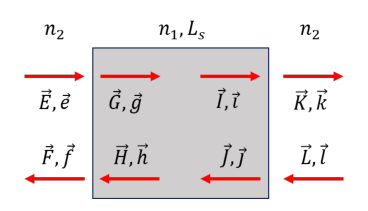
<figcaption class="paper-figure-caption"><b>Fig 1.</b> FIG. 1. Schematic diagram of the carrier and sideband fields on either side of the two interfaces which bound the slab of thickness Ls and index of refraction n1. The exterior medium has index of refraction n2.</figcaption>
</figure>
</div>

<p><strong>Summary.</strong> This theoretical work develops a comprehensive method to calculate the optical force on a dielectric slab by comparing the Lorentz force approach with momentum flux conservation. The key finding is that accounting for the time-dependent electromagnetic momentum stored inside the slab is necessary to reconcile conflicting results from different theoretical frameworks. This has implications for accurately modeling forces in optical cavities and optomechanical systems.</p>
<p><strong>Why it may be interesting.</strong> The rigorous reconciliation of different momentum formulations (Abraham vs. Minkowski) by identifying the role of stored field momentum is crucial for accurately modeling forces in cavity QED and optomechanics where field dynamics are central.</p>
<details>
<summary>Detailed structure</summary>
<p><strong>Main problem.</strong> The paper addresses the accurate calculation of the optical force exerted on a dielectric slab, specifically resolving discrepancies arising from the time dependence of electromagnetic momentum stored within the slab.</p>
<p><strong>Main result.</strong> The force calculation must incorporate a 'storage term' related to the time rate of change of stored field momentum to reconcile different theoretical formulations (Lorentz vs. momentum flux).</p>
<p><strong>Method.</strong> The authors employ two primary theoretical approaches—calculating the force via the Lorentz force on bound charges and via external momentum fluxes—and compare these results against continuum formulations (Minkowski and Abraham).</p>
<p><strong>Model / system.</strong> The system is a lossless, linear dielectric slab of arbitrary thickness submerged in a dielectric fluid, interacting with incident and reflected optical fields, often analyzed using a two-photon formalism.</p>
<p><strong>Key observables.</strong> Optical force ($\vec{F}$), momentum flux ($\vec{g}$), stress tensor ($\vec{\sigma}$), and the storage term ($rac{d\vec{p}_{   ext{vac}}}{dt}$).</p>
<p><strong>Important parameters / regimes.</strong> Slab thickness ($L_s$), refractive indices ($n_1, n_2$), and the frequency dependence (DC vs. AC fields).</p>
<p><strong>Assumptions / limitations.</strong> The surrounding medium is treated via a prescribed linear dielectric response, neglecting the accompanying mechanical response (pressure, electrostriction) of the fluid.</p>
<p><strong>Figures summary.</strong> Figure 1 schematically illustrates the decomposition of the electric field into carrier and sideband components on either side of the slab interfaces.</p>
<p><strong>Paper structure.</strong> The paper methodically compares the results from the Lorentz force calculation against those derived from momentum flux conservation, focusing on how the inclusion of the internal field momentum storage term resolves discrepancies between different continuum formulations.</p>
</details>
<details>
<summary>Abstract</summary>
<p>Radiation-pressure forces on transmissive optics, including dynamical backaction, are usually computed from the momentum flux of the external fields. For a dielectric of finite thickness, this omits the time dependence of the electromagnetic momentum stored inside. We compute the force on a lossless dielectric slab of arbitrary thickness $L_s$ submerged in a dielectric fluid, proceeding from both Lorentz force on its bound charges and from the external momentum fluxes for arbitrary carrier and sideband fields. We treat the surrounding medium through a prescribed linear dielectric response and do not model the accompanying mechanical response of the fluid, including pressure and electrostriction. These two methods both recover the expected force in the limit of a thin reflector, but differ in the more general case by the rate of change of the field momentum stored in the slab. This storage term vanishes for static fields and at low frequencies reduces to $(L_s/c^2)\,dP/dt$, where $P$ is the net power through the slab. In a cavity, where $P$ depends on the slab position, the storage term produces a velocity-dependent force. The Abraham and Minkowski momentum formulations applied to the storage term are reconciled to give an unambiguous force on the dielectric in the case of an exterior vacuum environment, where there is no fluid response to model.</p>
</details>
<p><sub><a href="#top">↑ back to top</a></sub></p>

<p><a id="paper-2610.27802"></a></p>
<h3 id="collective-hall-quantization-in-3d-chern-vector-systems"><a href="http://arxiv.org/abs/2610.27802v1">Collective Hall quantization in 3D Chern vector systems</a></h3>
<p><strong>Authors:</strong> Zhi-Qiang Zhang, Shuguang Cheng, Hongfang Liu, Hailong Li, Hua Jiang, X. C. Xie<br>
<strong>Type:</strong> theory · <strong>Category:</strong> other · <strong>PDF:</strong> <a href="https://arxiv.org/pdf/2610.27802v1">https://arxiv.org/pdf/2610.27802v1</a><br>
<strong>Analysis basis:</strong> full PDF text, analyzed in chunks
<strong>Topic relevance:</strong> <code>analog quantum simulation</code> <strong>1/5</strong></p>
<div class="figure-strip-hint">↔ Scroll figures horizontally</div>
<div class="paper-figures-scroll">
<figure class="paper-figure-card">
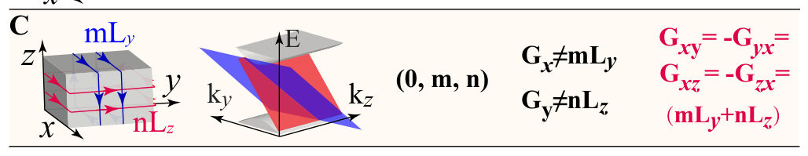
<figcaption class="paper-figure-caption"><b>Fig 1.</b> FIG. 1. Chiral modes, front surface state spectra, conductances and Hall effect from Chern-number insulators to Chern-vector insulators. (A) 2D samples with Cxy =n; (B) 3D samples with a single nonzero Chern component C=(0, 0, n); (C) 3D samples with multiple nonzero Chern components C = (0, m, n), with td = 0 for the schematic spectra. The sample sizes are Lα with α ∈x, y, z. Gα is the two-terminal conductance along α direction. To simplify the analysis, we set m = n = 1 and e2/h = 1 by default.</figcaption>
</figure>
<figure class="paper-figure-card">
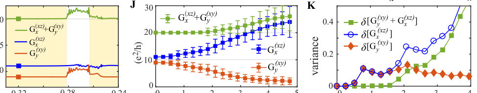
<figcaption class="paper-figure-caption"><b>Fig 2.</b> FIG. 2. Chiral surface states and quantized transport in a Chern-vector insulator. (A) Schematic illustration of the chiral surface states in a system with Chern vector C = (0, 1, 1). The sample details are indicated in the figure. (B) Half of the sample in (A), where solid (dashed) lines denote the visible (hidden) chiral modes. (C) Enlarged views of a typical chiral intersection in (A) for different inter-mode coupling strengths td. (D),(E) Chiral network transport for various lead configurations in (B). (F),(G) Energy spectra E versus ky with and without inter-mode coupling td, respectively. (H) Typical spatial distributions of the eigenstates, ρ = |ψn|2, for the blue and red modes...</figcaption>
</figure>
<figure class="paper-figure-card">
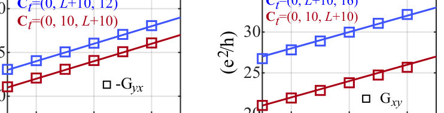
<figcaption class="paper-figure-caption"><b>Fig 3.</b> FIG. 3. Hall bar device measurement of quantized Hall conductance. (A) Schematic plot of Hall bar with current along the y-direction. (B) and (C) the Hall conductances versus Fermi energy E and Ct for the setup in (A). The total Chern vector Ct = (0, CxzLy, CxyLz) is marked in the figure with td = 0.1t. The solid lines plot (CxzLy +CxyLz) versus L. (D)-(F) are the same as those in (A)-(C), excepting currents along the x-direction. We set E =−0.2t for (C) and (F).</figcaption>
</figure>
<figure class="paper-figure-card">
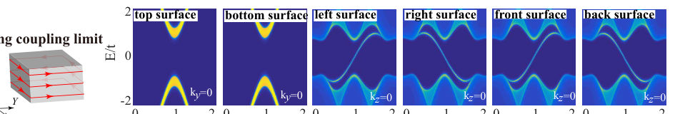
<figcaption class="paper-figure-caption"><b>Fig 4.</b> FIG. 4. Intrinsic 3D chiral network topology beyond stacked 2D QAH physics. Schematic of surface states for a 3D Chern insulator with a general Chern vector C = (0, m, n) in the general case (A) and the strong-coupling limit (C). (B) and (D) show surface configurations after coordinate rotation and cutting along high-index surfaces. In the general regime (B), the chiral network persists, maintaining a complex connectivity that cannot be reduced to simple 2D physics. In contrast, the strong-coupling limit (D) yields a configuration equivalent to a stacking of 2D QAH insulators with C = (0, 0, q). (E) and (F) give their typical surface spectra.</figcaption>
</figure>
<figure class="paper-figure-card">
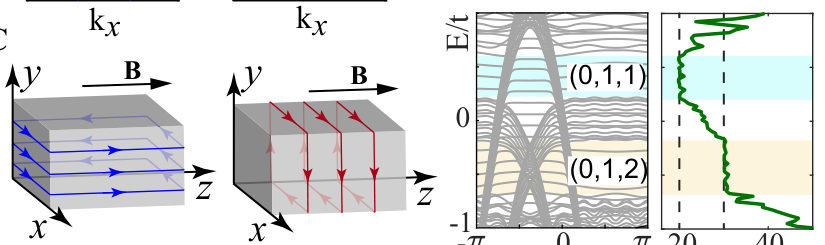
<figcaption class="paper-figure-caption"><b>Fig 5.</b> FIG. 5. Quantized Hall response in Chern-vector-protected 3D quantum Hall insulators. (A) Schematic band structures for a 3D QAH and a 3D metallic phase. The pink planes indicate the constant-energy surfaces. (B) Corresponding Fermi surfaces for the spectra shown in (A). (C) Surface states associated with (A) under an applied magnetic field. (D),(F) Numerically calculated band spectra at magnetic flux ϕ = 0.25π. (E) and (G) are Hall conductances of (D) and (F), respectively. The sample sizes are Lx =Ly =Lz =10. The other parameters are fixed at tx = ty = t, ε0 = −2t, tz = 0.1t, and td =0.1t</figcaption>
</figure>
</div>

<p><strong>Summary.</strong> This work investigates the 3D Quantum Hall Effect governed by a Chern vector $\mathbf{C}$. It predicts that while individual edge modes are fragile, the total Hall conductance remains robustly quantized due to a collective topological protection mechanism. This yields a conductance dependent on the product of Chern vector components and sample dimensions.</p>
<p><strong>Why it may be interesting.</strong> The concept of collective quantization in topological transport is a generalization of standard QHE results, suggesting new robust transport regimes beyond simple layer stacking or single-component topology.</p>
<details>
<summary>Detailed structure</summary>
<p><strong>Main problem.</strong> The paper addresses how quantized transport is protected in three-dimensional (3D) quantum Hall systems characterized by a Chern vector $\mathbf{C}$, especially when individual edge modes are susceptible to disorder.</p>
<p><strong>Main result.</strong> A distinct 3D quantized Hall effect is predicted, where the total Hall conductance $G_{xy}$ is robustly quantized to $\pm(mL_y + nL_z)e^2/h$, emerging from a collective property of the unified chiral network.</p>
<p><strong>Method.</strong> The analysis uses the Landauer-Büttiker formalism and examines the coupling between different Chern insulator sectors to calculate multi-terminal conductances.</p>
<p><strong>Model / system.</strong> The system is a 3D quantum Hall model generalized by a Chern vector $\mathbf{C} = (C_{yz}, C_{xz}, C_{xy})$, modeled using a tight-binding Hamiltonian coupling multiple Chern insulator sectors.</p>
<p><strong>Key observables.</strong> Quantized Hall conductance $G_{xy} = \pm(mL_y + nL_z)e^2/h$, and the sum of individual conductances $G_{xz}^x + G_{xy}^y$.</p>
<p><strong>Important parameters / regimes.</strong> Chern vector components $\mathbf{C} = (0, m, n)$, sample dimensions $L_y$ and $L_z$, and coupling strength $t_d$.</p>
<p><strong>Assumptions / limitations.</strong> The standard stacked-layer picture is only recovered in the singular strong-coupling limit, not in the general physical regime.</p>
<p><strong>Figures summary.</strong> Figures compare conductance scaling for 2D, single-component 3D, and multi-component 3D systems, illustrating the quantization of total Hall conductance $\text{G}_{yx}$ and $\text{G}_{xy}$ based on the total Chern vector $\mathbf{C}_t$.</p>
<p><strong>Paper structure.</strong> The paper establishes the problem of 3D QHE protection, develops a model using coupled Chern insulators, calculates transport using Landauer-Büttiker formalism, and concludes by predicting the collective quantization formula and suggesting candidate materials.</p>
</details>
<details>
<summary>Abstract</summary>
<p>Understanding the three-dimensional (3D) quantum Hall effect, characterized by a Chern vector rather than a single Chern number, has been a central pursuit in topological physics. While quantized Hall transport is established for the special case with one nonzero Chern component, recent realizations of more general Chern-vector states raise a fundamental question: how does such topology protect quantized transport? Here, we predict a distinct 3D quantized Hall effect protected by $\mathbf{C}=(0,m,n)$. For samples with dimensions $L_y$ and $L_z$, global topology enforces collective quantization of $mL_y+nL_z$, despite the fragility of individual edge modes to disorder. This reveals a novel transport regime in which robust quantization emerges as a holistic property of a unified chiral network,rather than of its constituent modes. Crucially, this collective response manifests as a quantized Hall conductance $G_{xy}=\pm(mL_y+nL_z)e^2/h$, with a distinctive dependence on both Chern-vector components and sample dimensions. We propose candidate materials to facilitate experimental observation.</p>
</details>
<p><sub><a href="#top">↑ back to top</a></sub></p>

<p><a id="paper-2610.28629"></a></p>
<h3 id="gbclaw-an-agentic-ai-framework-for-atomistic-grain-boundary-research-and-mechanistic-discovery"><a href="http://arxiv.org/abs/2610.28629v1">GBClaw: An agentic AI framework for atomistic grain boundary research and mechanistic discovery</a></h3>
<p><strong>Authors:</strong> Yazhuo Liu, Kunqing Ding, Xiaoguo Gong, Zifeng Wang, Yichen Yang, Yifeng Che, Wen Chen, Josh Kacher, Olivier Pierron, Shigenobu Ogata, Ting Zhu<br>
<strong>Type:</strong> theory · <strong>Category:</strong> other · <strong>PDF:</strong> <a href="https://arxiv.org/pdf/2610.28629v1">https://arxiv.org/pdf/2610.28629v1</a><br>
<strong>Analysis basis:</strong> full PDF text, analyzed in chunks
<strong>Topic relevance:</strong> <code>methods for driven-dissipative</code> <strong>1/5</strong></p>
<div class="figure-strip-hint">↔ Scroll figures horizontally</div>
<div class="paper-figures-scroll">
<figure class="paper-figure-card">

<figcaption class="paper-figure-caption"><b>Fig 1.</b> Fig. 1 | Agentic architecture of GBClaw for researcher-guided grain boundary research. The orchestrator serves as the central coordination hub, interfacing the researcher with five specialized agents, domain-specific scientific software tools, and a file-based hierarchical memory system. The modular architecture enables automated task decomposition and delegation, parallel simulation execution, structured information exchange, and interactive, human-in-the-loop workflow refinement.</figcaption>
</figure>
<figure class="paper-figure-card">
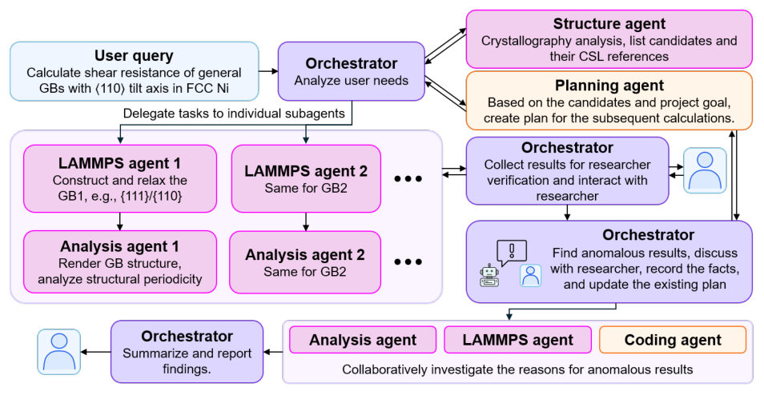
<figcaption class="paper-figure-caption"><b>Fig 2.</b> Fig. 2 | Agentic GBClaw workflow for systematic screening and mechanistic analysis of GB shear strength. The workflow combines automated exploration with human-in-the-loop domain guidance across six key stages: crystallographic screening, simulation planning, parallel bicrystal construction and structural analysis, researcher review, dynamic replanning, and targeted investigation of anomalous shear responses in general asymmetric ⟨110⟩ tilt GBs.</figcaption>
</figure>
<figure class="paper-figure-card">
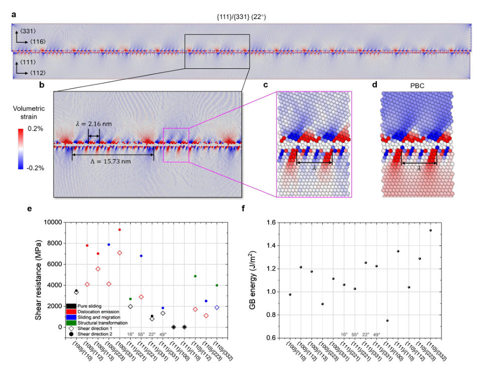
<figcaption class="paper-figure-caption"><b>Fig 3.</b> Fig. 3 | Atomic structures, structural periodicities, and shear responses of selected asymmetric incommensurate GBs. a, Extended GB in a Ni bicrystal after energy minimization, joining {331} and {111} terminating planes at a 22° misorientation angle, denoted as {111}/{331}(22°). b, Magnified view of the interface. Small and large red regions near the {331} terminating plane identify the cores of PGMDs and SGMDs, respectively. The primary period (𝜆𝜆= 2.16 nm) is the spacing between the repeating arrangement of PGMDs, and the secondary period (Λ = 15.73 nm) is the spacing between adjacent SGMDs. c, Magnified view of the boundary showing adjacent PGMDs separated by one 𝜆𝜆. d, Periodic...</figcaption>
</figure>
<figure class="paper-figure-card">
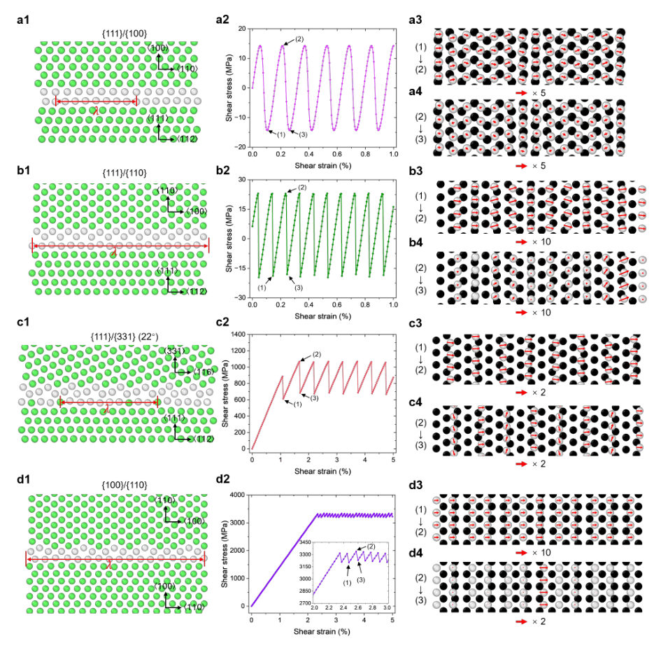
<figcaption class="paper-figure-caption"><b>Fig 4.</b> Fig. 4 | Supercell atomic structures, shear stress-strain responses, and displacement fields of GBs exhibiting pure sliding. a1–a4, {111}/{100} GB; b1–b4, {111}/{110} GB; c1–c4, {111}/{331}(22°) GB; d1–d4, {100}/{110} GB. For each boundary, panel 1 shows the relaxed atomic structure in a compact supercell with PBCs applied in the boundary plane, with</figcaption>
</figure>
<figure class="paper-figure-card">
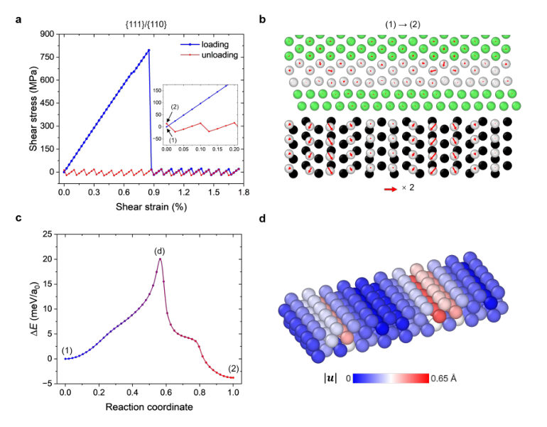
<figcaption class="paper-figure-caption"><b>Fig 5.</b> Fig. 5 | Loading-induced local reconstruction and associated energy barrier in the {111}/{110} GB. a. Shear stress-strain response during loading (blue) and unloading (red). The inset shows the residual shear stress of the initial relaxed configuration (1) and the final unloaded configuration (2), both evaluated at zero applied shear strain. b. Edge-on (upper) and plan (lower) views of configuration (2). Red arrows indicate atomic displacement vectors from configuration (1) to (2), scaled by a factor of two. c. Minimum energy path from an NEB calculation connecting configurations (1) and (2) at zero applied shear strain. d. Atomic configuration at the saddle point in c. Atoms are colored by...</figcaption>
</figure>
</div>

<p><strong>Summary.</strong> This paper introduces GBClaw, an agentic AI framework designed to automate the complex study of grain boundaries in materials. By integrating LLMs with specialized simulation tools, the framework systematically investigates how structural defects govern mechanical properties like shear strength. The work proves that combining advanced AI automation with deep physical modeling can yield profound insights into complex material interfaces.</p>
<p><strong>Why it may be interesting.</strong> While the core physics is materials science, the methodology—using advanced AI agents (LLMs) to automate complex, multi-step, domain-specific computational workflows—is highly relevant to developing automated research tools in quantum simulation and many-body physics.</p>
<details>
<summary>Detailed structure</summary>
<p><strong>Main problem.</strong> The core problem is automating complex, domain-intensive mechanistic investigations into the structure and deformation of general grain boundaries (GBs) in polycrystalline materials.</p>
<p><strong>Main result.</strong> The framework successfully characterized 14 general asymmetric tilt GBs in nickel, demonstrating that the defect hierarchy (e.g., secondary misfit dislocations) critically controls the shear strength and deformation modes.</p>
<p><strong>Method.</strong> The authors developed and applied GBClaw, an agentic AI framework integrating LLMs with specialized agents (e.g., LAMMPS agent) to perform systematic, iterative simulations.</p>
<p><strong>Model / system.</strong> The study focuses on general, asymmetric tilt grain boundaries in FCC nickel. The analysis involves simulating structural relaxation, shear loading, and mapping dislocation structures using atomistic simulations (LAMMPS).</p>
<p><strong>Key observables.</strong> Interfacial defect structures, diverse deformation modes, shear strength ($\tau_0$), primary ($\lambda$) and secondary ($\Lambda$) periodicities, and Burgers vectors.</p>
<p><strong>Important parameters / regimes.</strong> Shear stress ($\tau_0$), misorientation angle deviation, and the ratio of dislocation spacings defining periodicity.</p>
<p><strong>Assumptions / limitations.</strong> The framework requires human-in-the-loop guidance for objective setting and result interpretation; the physical correctness of claims relies on linking to simulation sources.</p>
<p><strong>Figures summary.</strong> Figures illustrate the agentic architecture of GBClaw, the workflow for screening GBs, atomic structures of various GBs, and stress-strain curves showing stress drops during dislocation glide/migration.</p>
<p><strong>Paper structure.</strong> The paper introduces the agentic AI framework (GBClaw) to address the complexity of general GBs. It systematically screens candidate GBs, performs detailed shear simulations, identifies defect structures (SGMDs), and analyzes specific migration mechanisms.</p>
</details>
<details>
<summary>Abstract</summary>
<p>Agentic artificial intelligence (AI) systems hold immense potential for automating complex workflows in materials discovery and design, but extending them to domain-intensive mechanistic investigations remains challenging. Here, we present GBClaw, an agentic AI framework for investigating the structure and deformation of general grain boundaries (GBs). Although general GBs constitute the vast majority of real-world interfaces in polycrystalline materials, they remain understudied because their structural complexity and interfacial mismatch complicate experimental and modeling research. GBClaw integrates large language models (LLMs) into a modular architecture comprising an orchestrator, specialized agents, domain-specific tools, simulation interfaces, and hierarchical memory. Through dynamic replanning and iterative workflow refinement, the framework effectively connects systematic simulations with targeted mechanistic analysis. Applied to 14 general asymmetric tilt GBs in nickel, GBClaw characterized interfacial defect structures and identified diverse deformation modes across these incommensurate boundaries. Comparing boundary sliding with and without secondary GB misfit dislocations revealed substantial differences in shear strength, underscoring the critical role of defect hierarchies in sliding resistance. Furthermore, researcher-guided follow-up calculations traced an anomalously high shear resistance to metastable boundary structures. This work demonstrates that combining agentic AI with domain expertise bridges high-throughput computational screening with deep physical understanding of complex material interfaces.</p>
</details>
<p><sub><a href="#top">↑ back to top</a></sub></p>

<p><a id="paper-2610.28024"></a></p>
<h3 id="generalized-spin-groups-and-applications-to-magnons"><a href="http://arxiv.org/abs/2610.28024v1">Generalized Spin Groups and Applications to Magnons</a></h3>
<p><strong>Authors:</strong> Xinhai Tu, Di Wang, Yuxuan Mu, Xiangang Wan<br>
<strong>Type:</strong> theory · <strong>Category:</strong> other · <strong>PDF:</strong> <a href="https://arxiv.org/pdf/2610.28024v1">https://arxiv.org/pdf/2610.28024v1</a><br>
<strong>Analysis basis:</strong> full PDF text, analyzed in chunks
<strong>Topic relevance:</strong> <code>analog quantum simulation</code> <strong>1/5</strong></p>
<div class="figure-strip-hint">↔ Scroll figures horizontally</div>
<div class="paper-figures-scroll">
<figure class="paper-figure-card">
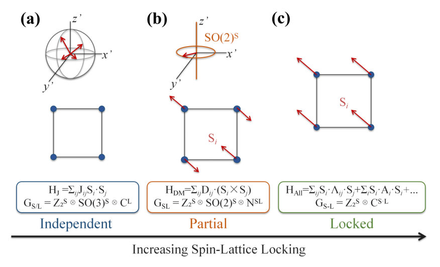
<figcaption class="paper-figure-caption"><b>Fig 1.</b> FIG. 1. Schematic progression from independent to fully locked spin and lattice operations. (a) In the absence of SOC, spin operations of spin Hamiltonian act independently of lattice operations , and the symmetry of the Heisenberg Hamiltonian is described by ZS 2 ⊗SO(3)S ⊗CL. (b) With DM interaction, residual spin-only operations coexist with combined spin-lattice operations. This partially locked spin Hamiltonian can be described by GSGs. (c) In the limiting case of complete spin-lattice locking, spin operations are tied to lattice operations, and the symmetry of the spin Hamiltonian has symmetry ZS 2 ⊗CS·L.</figcaption>
</figure>
</div>

<p><strong>Summary.</strong> This paper introduces Generalized Spin Groups (GSGs) to provide a comprehensive symmetry framework for analyzing magnons in magnetic materials, particularly when Spin-Orbit Coupling (SOC) is present. By classifying symmetries beyond simple isotropic models, the authors derive strict constraints on magnon transport properties like thermal and spin conductivity tensors. This unified approach significantly refines the theoretical understanding of magnon behavior in complex magnetic systems.</p>
<p><strong>Why it may be interesting.</strong> While focused on condensed matter magnetism, the rigorous group-theoretic approach to constraining physical responses (like transport tensors) based on underlying symmetries is highly relevant to developing symmetry-protected topological phases or understanding quantum constraints in many-body systems.</p>
<details>
<summary>Detailed structure</summary>
<p><strong>Main problem.</strong> The paper addresses the need for a systematic symmetry framework for magnons that accurately describes systems beyond the simple isotropic Heisenberg model, especially when Spin-Orbit Coupling (SOC) introduces complex anisotropic interactions.</p>
<p><strong>Main result.</strong> The authors develop Generalized Spin Groups (GSGs), classifying symmetries into 6 spin-only groups and yielding a total of 161 nontrivial spin groups, providing a unified analysis for magnon transport with or without SOC.</p>
<p><strong>Method.</strong> The methodology involves classifying symmetries of spin Hamiltonians (including Heisenberg, DM, $\Gamma$, and SIA terms) by decomposing the symmetry group into a Spin-Only Group (SOG) and a Non-trivial Spin Group (NSG).</p>
<p><strong>Model / system.</strong> The study focuses on magnon excitations in magnetic materials described by spin Hamiltonians, utilizing examples like the MnPS3 model. The Hamiltonian incorporates isotropic exchange, DM, $\Gamma$ exchange, and SIA terms.</p>
<p><strong>Key observables.</strong> Magnon thermal conductivity and spin conductivity tensors, and the classification of symmetry-allowed magnon transport channels.</p>
<p><strong>Important parameters / regimes.</strong> The presence and type of anisotropic interactions induced by SOC (DM, $\Gamma$, SIA) are critical parameters determining the symmetry group.</p>
<p><strong>Assumptions / limitations.</strong> The framework assumes that the residual symmetries can be systematically captured by the GSG structure, moving beyond the limitations of conventional magnetic groups which assume full spin-lattice locking.</p>
<p><strong>Figures summary.</strong> Figure 1 schematically shows the symmetry progression from no SOC to full spin-lattice locking. Tables I, II, and S1-S3 summarize the classification of SOGs and NSGs for various interactions and magnetic configurations.</p>
<p><strong>Paper structure.</strong> The paper systematically develops the GSG framework by first classifying symmetries for individual interactions (Heisenberg, DM, etc.), then determining symmetries for ordered states via spontaneous symmetry breaking, and finally applying the resulting symmetry constraints to derive allowed forms for magnon transport tensors.</p>
</details>
<details>
<summary>Abstract</summary>
<p>Spin groups provide the natural symmetry framework for the isotropic Heisenberg model, in which spin and lattice degrees of freedom are separable. They have recently found broad applications in describing electronic band structure, magnon band topology, and transport phenomena. However, a typical spin Hamiltonian describing magnons contains not only isotropic Heisenberg exchange but also anisotropic interactions induced by spin-orbit coupling (SOC), including the Dzyaloshinskii-Moriya (DM) interaction, the Gamma exchange, and the single-ion anisotropy (SIA), which strongly influence magnon properties. More recently, some studies have also revealed relativistic magnon transport phenomena in altermagnets. Such systems typically exhibit partial spin-lattice locking, but are commonly assumed to be described by conventional magnetic groups. Here, we develop a systematic symmetry framework, generalized spin groups, for magnons. We first classify the symmetries of Heisenberg, DM, Gamma, and SIA interactions. The resulting classification contains 6 spin-only groups, together with a total of 161 nontrivial spin groups. The symmetries of magnetically ordered phases are then obtained through spontaneous symmetry breaking of the corresponding parent groups for spin Hamiltonians. We also identify 6 spin-only groups for ordered states, which generate 90, 264, 157, 264, 387, and 598 nontrivial spin groups, respectively. Finally, we apply generalized spin groups to the magnon thermal conductivity and spin conductivity tensors and derive all the symmetry-allowed forms. Our results provide a unified symmetry framework for analyzing magnon transport both with and without SOC, yielding more refined constraints on magnon responses.</p>
</details>
<p><sub><a href="#top">↑ back to top</a></sub></p>

<p><a id="paper-2610.28052"></a></p>
<h3 id="polarity-selective-domain-wall-propagation-driven-by-spin-orbit-torque"><a href="http://arxiv.org/abs/2610.28052v1">Polarity-selective domain wall propagation driven by spin-orbit torque</a></h3>
<p><strong>Authors:</strong> Nobuyuki Umetsu, Michael Quinsat, Masaki Kado, Hiroki Tokuhira<br>
<strong>Type:</strong> theory · <strong>Category:</strong> other · <strong>PDF:</strong> <a href="https://arxiv.org/pdf/2610.28052v1">https://arxiv.org/pdf/2610.28052v1</a><br>
<strong>Analysis basis:</strong> full PDF text, analyzed in chunks
<strong>Topic relevance:</strong> <code>Frenkel-Kontorova</code> <strong>1/5</strong></p>
<div class="figure-strip-hint">↔ Scroll figures horizontally</div>
<div class="paper-figures-scroll">
<figure class="paper-figure-card">
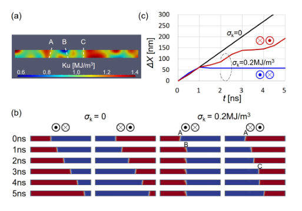
<figcaption class="paper-figure-caption"><b>Fig 1.</b> FIG. 1. (a) Random PMA landscape with ¯K = 1.06 MJ/m3, σk = 0.2 MJ/m3, and lk = 20 nm. A is the relaxed initial DW position, and B and C are pinning sites. (b) DW snapshots at j = 45 × 1010 A/m2 for the ⊙⊗and ⊗⊙walls in uniform and disordered cases. (c) Time evolution of DW displacement.</figcaption>
</figure>
<figure class="paper-figure-card">
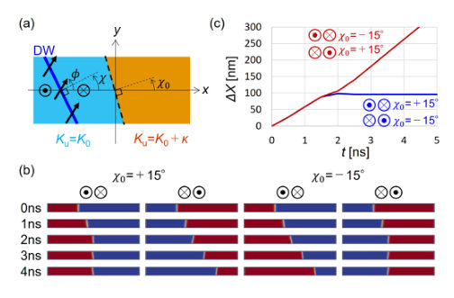
<figcaption class="paper-figure-caption"><b>Fig 2.</b> FIG. 2. (a) Step-like PMA profile. (b) DW snapshots at j = 70 × 1010 A/m2 for K0 = 1.06 MJ/m3, κ = 0.25 MJ/m3</figcaption>
</figure>
<figure class="paper-figure-card">
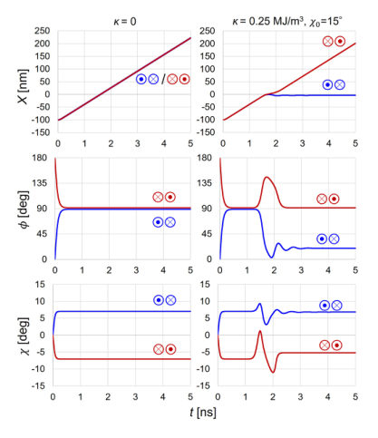
<figcaption class="paper-figure-caption"><b>Fig 3.</b> FIG. 3. DW dynamics computed from the 1DM at j = 70 × 1010 A/m2. The origin X = 0 is at the center of the Ku boundary. The left panels correspond to κ = 0, while the right panels correspond to κ = 0.25 MJ/m3 with χ0 = 15◦.</figcaption>
</figure>
<figure class="paper-figure-card">

<figcaption class="paper-figure-caption"><b>Fig 4.</b> FIG. 4. Propagation threshold jc as a function of (a) χ0 for κ = 0.25 MJ/m3 and (b) κ for χ0 = 15◦. Panel (a) uses α = 0.03, while panel (b) shows 1DM results for α = 0.03 and 0.5. The pulse duration is 10 ns. Open and filled markers represent micromagnetic and 1DM results, respectively. In (a), the inset shows an enlarged view near χ0 = 0. In (b), the dashed and dotted lines indicate jstat.</figcaption>
</figure>
<figure class="paper-figure-card">
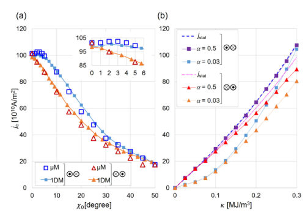
<figcaption class="paper-figure-caption"><b>Fig 5.</b> Figure 4(b) shows the κ dependence of jc for both DW polarities, obtained from the 1DM for α = 0.03 and 0.5. As κ increases, jc increases for both polarities, and the splitting between the two thresholds becomes more pro- nounced. The lower jc at smaller α indicates that the propagation threshold depends on both the static pinning landscape and transient DW dynamics. A higher SOT- driven DW velocity at lower damping [19, 37] can allow the wall to cross the PMA boundary before reaching a pinned state. The coupled transient dynamics of ϕ and X may also persist longer at lower damping and facilitate boundary crossing [45]. Deriving a general analytical cri- terion for propagation would require...</figcaption>
</figure>
</div>

<p><strong>Summary.</strong> This paper demonstrates that the local geometry of magnetic anisotropy can select the propagation direction of domain walls driven by spin-orbit torque. Using micromagnetic simulations and a 1D collective-coordinate model, the authors show that opposite wall polarities experience different pinning forces when encountering an inclined anisotropy boundary. This mechanism offers a pathway for controlling magnetic information storage via material design.</p>
<p><strong>Why it may be interesting.</strong> The work provides a detailed, physics-based mechanism for controlling magnetic domain wall motion using engineered material disorder and spin-orbit torques, which is relevant to spintronics and magnetic memory applications.</p>
<details>
<summary>Detailed structure</summary>
<p><strong>Main problem.</strong> The study investigates how spatial variations in magnetic anisotropy impede the spin-orbit-torque (SOT)-driven motion of chiral domain walls (DWs), demonstrating that the local geometry dictates which wall polarity propagates.</p>
<p><strong>Main result.</strong> Opposite wall polarities exhibit qualitatively different pinning strengths near an inclined anisotropy boundary, leading to polarity-selective domain wall propagation. The critical current density ($j_c$) differs significantly between the two polarities.</p>
<p><strong>Method.</strong> The research employs micromagnetic simulations on random anisotropy landscapes and develops an extended one-dimensional collective-coordinate model (1DM) to capture the dynamics.</p>
<p><strong>Model / system.</strong> The system involves perpendicularly magnetized nanowires exhibiting PMA and DMI, modeled using the Landau–Lifshitz–Gilbert equation and simplified to a 1DM with coordinates $(\zeta, \phi, \chi)$. The anisotropy landscape is generated using diffusion-based smoothing of random noise.</p>
<p><strong>Key observables.</strong> DW velocity, pinning strength, critical current density ($j_c$), and the DW tilt angle ($\chi$).</p>
<p><strong>Important parameters / regimes.</strong> Anisotropy boundary angle ($\chi_0$), current density ($j$), and the anisotropy strength parameter ($\kappa$).</p>
<p><strong>Assumptions / limitations.</strong> The analysis often assumes $eta_{so}=0$ for main results, treats the DW width ($\lambda$) as constant, and uses the 1DM framework derived from the generalized Euler–Lagrange formalism.</p>
<p><strong>Figures summary.</strong> Figures show DW snapshots and time evolution in random PMA landscapes, and the 1DM dynamics illustrate the difference in propagation thresholds ($j_c$) for up-down versus down-up walls as a function of the boundary angle $\chi_0$.</p>
<p><strong>Paper structure.</strong> The paper progresses from analyzing the general micromagnetic behavior in disordered systems to deriving a simplified 1DM model. It then uses this model to analytically determine the static pinning limit ($j_{	ext{stat}}$) and compares it to the dynamic propagation threshold ($j_c$), highlighting the geometric selection mechanism.</p>
</details>
<details>
<summary>Abstract</summary>
<p>Spatial variations in magnetic anisotropy impede the spin-orbit-torque-driven motion of chiral domain walls in perpendicularly magnetized nanowires. We show that the local geometry of a two-dimensional anisotropy landscape can select which wall polarity propagates under a given current. Micromagnetic simulations of spatially correlated random anisotropy landscapes generated by diffusion-based smoothing reveal different propagation outcomes for up--down and down--up walls within the same disorder realization. A single inclined anisotropy boundary isolates the mechanism: in the presence of the Dzyaloshinskii--Moriya interaction, opposite wall polarities develop opposite current-induced tilts, producing different alignment with the boundary and hence different pinning strengths. Reversing the boundary inclination interchanges the pinned and propagating polarities. An extended collective-coordinate model captures this geometric selection and distinguishes the propagation threshold from the static pinning limit.</p>
</details>
<p><sub><a href="#top">↑ back to top</a></sub></p>

<p><a id="paper-2610.27664"></a></p>
<h3 id="pressure-induced-superconductivity-in-a-bilayer-metal"><a href="http://arxiv.org/abs/2610.27664v1">Pressure-induced superconductivity in a bilayer metal</a></h3>
<p><strong>Authors:</strong> Tomoya Sano, Satoshi Ikegaya, Shingo Kobayashi, Yasuhiro Asano<br>
<strong>Type:</strong> theory · <strong>Category:</strong> strongly correlated electrons · <strong>PDF:</strong> <a href="https://arxiv.org/pdf/2610.27664v1">https://arxiv.org/pdf/2610.27664v1</a><br>
<strong>Analysis basis:</strong> full PDF text, analyzed in chunks
<strong>Topic relevance:</strong> <code>Keldysh / 2PI / non-Gaussian methods</code> <strong>1/5</strong></p>
<div class="figure-strip-hint">↔ Scroll figures horizontally</div>
<div class="paper-figures-scroll">
<figure class="paper-figure-card">
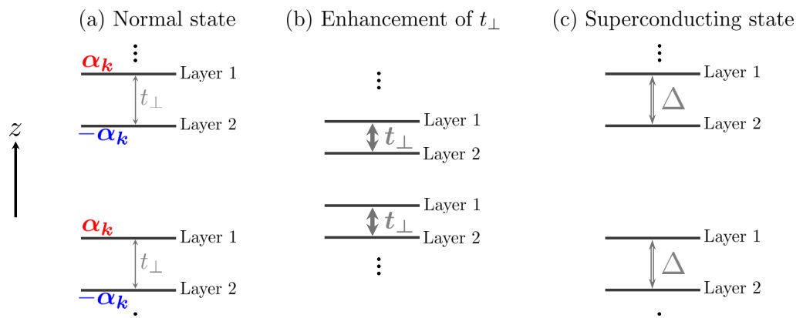
<figcaption class="paper-figure-caption"><b>Fig 1.</b> FIG. 1. Schematics of the locally non-centrosymmetric bilayers. (a): In the normal state, a bilayer consists of Layer 1 and Layer 2. They couple with each other by the interlayer hybridization t⊥. The SOCs have opposite signs: αk in Layer 1 and −αk in Layer 2. (b): Uniaxial pressure along the z-axis decreases the interlayer distance. Such effects are taken into account through the enhancement of the interlayer hybridization t⊥. (c): The pair potentials in this paper describe Cooper pairings between two electrons staying at different layers.</figcaption>
</figure>
<figure class="paper-figure-card">
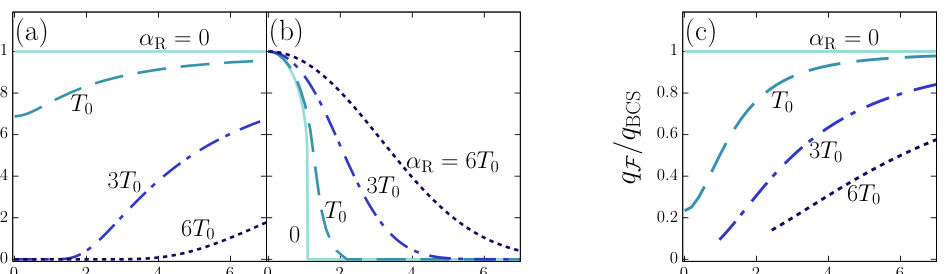
<figcaption class="paper-figure-caption"><b>Fig 2.</b> FIG. 2. The transition temperature Tc as a function of the interlayer hybridization t⊥. In this paper, we assume that t⊥ is an increasing function of the external pressure. Therefore, the results can be interpreted as the P–T phase diagram for various pairing states. (a): ESEE pairing state or ETOE pairing state with dk = d(¯ky, −¯kx, 0). (b): ETEO pairing state with d = (0, 0, d) (c): The total superfluid weight qF as a function of the interlayer hybridization t⊥for ESEE pairing state. The solid, dashed, dash-dotted, and dotted lines correspond to the amplitudes of the layer-dependent SOC αR = 0, T0, 3T0, and 6T0, respectively.</figcaption>
</figure>
<figure class="paper-figure-card">
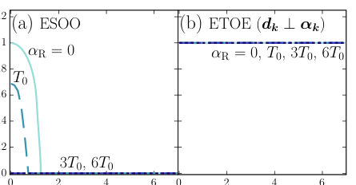
<figcaption class="paper-figure-caption"><b>Fig 3.</b> FIG. 3. The transition temperature Tc as a function of the interlayer hybridization t⊥. (a): ESOO pairing state with ∆k (b): ETOE pairing state with dk = (0, 0, d¯kx) The solid, dashed, dash-dotted, and dotted lines correspond to the am- plitudes of the layer-dependent SOC αR = 0, T0, 3T0, and 6T0, respectively.</figcaption>
</figure>
</div>

<p><strong>Summary.</strong> This work develops a theoretical model for pressure-induced superconductivity in bilayer metals, attributing the mechanism to the interplay between spin-orbit coupling and interlayer hybridization. By analyzing the symmetry of induced Cooper pair potentials, the authors show that PIS emerges when a specific even-frequency pairing correlation compensates for the SOC-induced suppression of superconductivity.</p>
<p><strong>Why it may be interesting.</strong> The focus on symmetry-protected pairing mechanisms (even vs. odd frequency) and the role of structural parameters (pressure/hybridization) to induce superconductivity is highly relevant to understanding unconventional pairing in correlated materials.</p>
<details>
<summary>Detailed structure</summary>
<p><strong>Main problem.</strong> The paper proposes a theoretical model to explain the mechanism of pressure-induced superconductivity (PIS) in a bilayer metal without relying on BCS enhancements of coupling constants or density of states.</p>
<p><strong>Main result.</strong> PIS is predicted to occur when the interplay between spin-orbit coupling (SOC) and interlayer hybridization induces an additional even-frequency pairing correlation, stabilizing the superconducting state.</p>
<p><strong>Method.</strong> The analysis involves solving the linearized Gor'kov equation for the Bogoliubov-de Gennes Hamiltonian and calculating the superfluid weight ($Q$) to determine superconducting state stability.</p>
<p><strong>Model / system.</strong> The system is a bilayer metal where the Hamiltonian includes terms for interlayer hybridization ($t_\perp$) and SOC ($oldsymbol{\alpha}_{\mathbf{k}}$). Four types of interlayer pair potentials are analyzed based on their frequency and symmetry properties.</p>
<p><strong>Key observables.</strong> Superfluid weight ($Q$ or $q_F$), Critical Temperature ($T_c$), and the presence/magnitude of different pairing correlations (even/odd frequency).</p>
<p><strong>Important parameters / regimes.</strong> Interlayer hybridization ($t_\perp$), SOC strength ($\alpha_R$), and external pressure (which enhances $t_\perp$).</p>
<p><strong>Assumptions / limitations.</strong> The analysis assumes that SOC induces odd-frequency pairing that suppresses superconductivity at ambient pressure, requiring a second, even-frequency correlation to stabilize the state.</p>
<p><strong>Figures summary.</strong> Figures illustrate the bilayer structure, the dependence of $T_c$ and $q_F$ on $t_\perp$ for different pairing states (ESEE, ETEO), and the general mechanism of PIS.</p>
<p><strong>Paper structure.</strong> The paper systematically analyzes different pair potentials (ESEE, ETOE, ETEO) by solving the gap equation and calculating the superfluid weight, demonstrating how the interplay between SOC and hybridization drives PIS.</p>
</details>
<details>
<summary>Abstract</summary>
<p>We propose a model that explains the mechanism of pressure-induced superconductivity in a bilayer metal. Four types of pair potentials are assumed for a Cooper pair consisting of two electrons on different layers. Absence of local inversion symmetry gives rise to the spin-orbit coupling which is antisymmetric in the two layers. We assume that external pressure enhances the hybridization between the two layers. The stability of the superconducting states is well explained by the frequency symmetry of the induced pairing correlations by these potentials. Pressure-induced superconductivity emerges when the following two conditions are realized. (i) The spin-orbit coupling induces the odd-frequency pairing correlations and suppresses superconductivity at ambient pressure. (ii) The interplay between the spin-orbit coupling and the hybridization induces the additional pairing correlation that belongs to an even-frequency symmetry class. We briefly discuss the relevance of our model to real materials.</p>
</details>
<p><sub><a href="#top">↑ back to top</a></sub></p>
<h3 id="other-secondary-papers-4">Other secondary papers (4)</h3>
<details>
<summary>Show other secondary papers</summary>

<p><a id="paper-2610.27532"></a></p>
<h3 id="invariant-pseudo-unitary-matrix-ensembles-and-local-statistics-and-conductance-fluctuations-of-the-dmpk-ensemble"><a href="http://arxiv.org/abs/2610.27532v1">Invariant pseudo-unitary matrix ensembles and local statistics and conductance fluctuations of the DMPK ensemble</a></h3>
<p><strong>Authors:</strong> Dong Wang, Thomas Wolfs<br>
<strong>Type:</strong> theory · <strong>Category:</strong> disordered systems and neural networks · <strong>PDF:</strong> <a href="https://arxiv.org/pdf/2610.27532v1">https://arxiv.org/pdf/2610.27532v1</a><br>
<strong>Analysis basis:</strong> full PDF text, analyzed in chunks</p>
<div class="figure-strip-hint">↔ Scroll figures horizontally</div>
<div class="paper-figures-scroll">
<figure class="paper-figure-card">
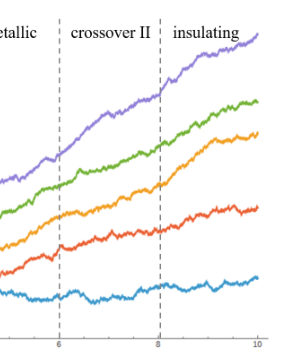
<figcaption class="paper-figure-caption"><b>Fig 1.</b> Figure 1: DMPK ensemble as a non-intersecting path model.</figcaption>
</figure>
<figure class="paper-figure-card">
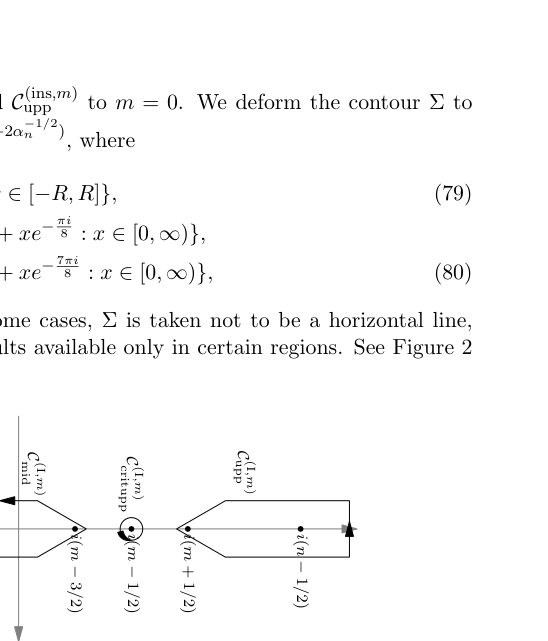
<figcaption class="paper-figure-caption"><b>Fig 2.</b> Figure 2: Contours in Section 5.1.1. Figure rotated 90◦clockwise.</figcaption>
</figure>
<figure class="paper-figure-card">
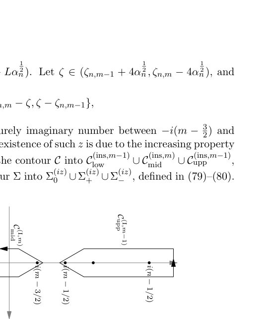
<figcaption class="paper-figure-caption"><b>Fig 3.</b> Figure 3: Contours in Section 5.1.2. Figure rotated 90◦clockwise.</figcaption>
</figure>
<figure class="paper-figure-card">
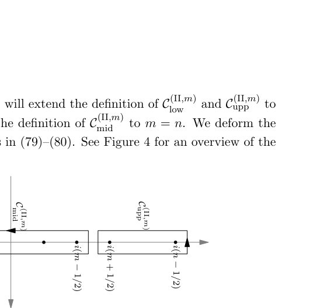
<figcaption class="paper-figure-caption"><b>Fig 4.</b> Figure 4: Contours in Section 5.2.1. Figure rotated 90◦clockwise.</figcaption>
</figure>
<figure class="paper-figure-card">

<figcaption class="paper-figure-caption"><b>Fig 5.</b> Figure 5: Contours in Section 5.3.1. Figure rotated 90◦clockwise.</figcaption>
</figure>
</div>
<p><strong>Summary.</strong> This paper rigorously analyzes the DMPK ensemble, a model for quantum transport in disordered wires. It determines the universal limiting statistics—such as Sine, Bessel, and Airy statistics—in different physical regimes. Crucially, it proves that the conductance fluctuations are universal, confirming theoretical predictions for mesoscopic conductors.</p>
<p><strong>Why it may be interesting.</strong> The connection between random matrix theory (RMT) techniques (like those used for level spacing) and the conductance fluctuations in mesoscopic quantum systems is fundamental to understanding transport in disordered materials, which is a key area in condensed matter theory.</p>
<details>
<summary>Detailed structure</summary>
<p><strong>Main problem.</strong> The paper aims to describe the limiting local statistics and prove the universal conductance fluctuations of the DMPK ensemble, which models quantum transport in a disordered wire.</p>
<p><strong>Main result.</strong> The local statistics are found to be Sine, Bessel, and Airy statistics in different regimes, and the conductance variance is proven to approach the universal value of 1/15 in the metallic regime.</p>
<p><strong>Method.</strong> The analysis involves constructing a class of invariant pseudo-unitary matrices and interpreting the DMPK ensemble as the joint density of spectral variables of a product of these random matrices, followed by asymptotic analysis of the correlation kernel.</p>
<p><strong>Model / system.</strong> The model is the DMPK ensemble, which describes quantum transport in a disordered wire with $n$ propagating channels. The physics is analyzed across different regimes: ballistic, metallic/diffusive, and insulating/localized.</p>
<p><strong>Key observables.</strong> Local statistics (Sine, Bessel, Airy), Conductance $G$, and its variance $    ext{Var}(G)$.</p>
<p><strong>Important parameters / regimes.</strong> Number of channels ($n$), dynamic parameter ($M$), and the scaling ratios defining the regimes (e.g., $M/n$).</p>
<p><strong>Assumptions / limitations.</strong> The analysis relies on connecting the DMPK ensemble to the joint density of spectral variables of a product of specific random matrices, and the results for local statistics are stated 'up to cocycles'.</p>
<p><strong>Figures summary.</strong> Figure 1 illustrates the DMPK ensemble as a non-intersecting path model, showing simulated paths across different physical regimes.</p>
<p><strong>Paper structure.</strong> The paper establishes the mathematical framework using invariant pseudo-unitary matrices, derives the correlation kernel for the DMPK ensemble, analyzes the limiting local statistics in various regimes (metallic, insulating, crossovers), and finally proves the universal conductance fluctuation result.</p>
</details>
<details>
<summary>Abstract</summary>
<p>We consider the DMPK ensemble, which models quantum transport in a disordered wire, and describe its limiting local statistics as the number of particles tends to infinity. In the metallic regime, as well as at crossover I, we obtain sine statistics in the bulk, Bessel statistics at the hard edge and Airy statistics at the soft edge. In the insulating regime, we prove localization around certain explicit deterministic positions with Gaussian fluctuations. This confirms and quantifies the predicted universal and localized behavior in the physics literature. At crossover II, we obtain explicit limiting kernels in the bulk and at both edges, which interpolate between these regimes. The hard edge kernel involves Legendre functions and, to the best of our knowledge, is new, while the bulk and soft edge kernels agree with those derived for the squared singular values of critically scaled products of independent Ginibre matrices. To explain these similarities, we construct a class of invariant pseudo-unitary matrices that is closed under taking products and use it to interpret the DMPK ensemble as the joint density of the spectral variables of a product of such random matrices. More generally, the latter takes the form of a polynomial ensemble of derivative type involving a second order differential operator compatible with the Legendre functions. Finally, we obtain uniform asymptotic expansions of the mean and variance of the conductance and prove that the DMPK ensemble admits universal conductance fluctuations, i.e. the variance of the conductance tends to $1/15$ throughout the whole metallic regime. This again confirms the predictions in the physics literature.</p>
</details>
<p><sub><a href="#top">↑ back to top</a></sub></p>

<p><a id="paper-2610.27412"></a></p>
<h3 id="learning-the-geometry-of-materials-space-with-trained-neural-tangent-kernels"><a href="http://arxiv.org/abs/2610.27412v1">Learning the Geometry of Materials Space with Trained Neural Tangent Kernels</a></h3>
<p><strong>Authors:</strong> Daniel Kaplan, Gabriel Kotliar, Anirvan M Sengupta<br>
<strong>Type:</strong> theory · <strong>Category:</strong> strongly correlated electrons · <strong>PDF:</strong> <a href="https://arxiv.org/pdf/2610.27412v1">https://arxiv.org/pdf/2610.27412v1</a><br>
<strong>Analysis basis:</strong> full PDF text, analyzed in chunks</p>
<div class="figure-strip-hint">↔ Scroll figures horizontally</div>
<div class="paper-figures-scroll">
<figure class="paper-figure-card">

<figcaption class="paper-figure-caption"><b>Fig 1.</b> FIG. 1 : Schematic overview of the workflow. Minimal compositional descriptors are used to train a neural network predictor for superconducting properties. The neural tangent kernel (NTK) evaluated at trained parameters induces a task-adaptive similarity geometry on materials space. Dimensional reduction and clustering of this geometry reveal semantically meaningful structure learned through supervised training.</figcaption>
</figure>
<figure class="paper-figure-card">

<figcaption class="paper-figure-caption"><b>Fig 2.</b> FIG. 2 : Properties and structure of the NTK. (a) The Shepard plot, i.e., embedding distance ||zi−zj|| vs Euclidean distance of an untrained NTK realization, derived first the first N = 1 step of training. No embedding is generated. (b) Eigenvalue spectrum of the train NTK. Approximately two principal eigenvalues can be discerned. (Note the log scale). (c) Kernel Ridge Regression (KRR) properties: rapid convergence of the KRR with respect to the regularization λ confirms the relative number of useful degrees of freedom (non-null eigenvalues in (b)). (d) Shepard plot of the trained NTK, indicating a significantly different embedding of the data.</figcaption>
</figure>
<figure class="paper-figure-card">

<figcaption class="paper-figure-caption"><b>Fig 3.</b> FIG. 3 : Low-dimensional embedding of superconducting materials obtained from classical multidimensional scaling (MDS) applied to trained NTK distances. Colors correspond to clusters identified through unsupervised k-means clustering in the embedded representation space. Several clusters align with known superconducting families, including cuprates, iron-based su- perconductors, undoped or otherwise superconductors with “simple” chemical formulae, and non-superconducting compounds. As this information is not present during training, we manually assign labels to the generated clusters; each cluster taxonomy is determined by the the first 200 compounds, measured by distance to the centroid.</figcaption>
</figure>
<figure class="paper-figure-card">

<figcaption class="paper-figure-caption"><b>Fig 4.</b> FIG. 4 : Neighborhood structure induced by the trained NTK geometry. Materials are ordered according to radial distance from representative compounds in the learned NTK metric (top: YBa2Cu4O8-based cuprate; bottom: CeCoIn5 heavy-fermion superconductor). Blue points show NTK distance, while red points indicate the superconducting transition temperature Tc. Gray dashed lines denote distance gaps used to identify neighborhood shells in the learned geometry. Nearby compounds frequently share chemical motifs, doping structure, or correlated-electron phenomenology despite substantial variation in Tc, indicating that the trained NTK captures transferable physical structure beyond the original...</figcaption>
</figure>
<figure class="paper-figure-card">

<figcaption class="paper-figure-caption"><b>Fig 5.</b> FIG. 5 : Measure of K(x, x) as uncertainty in clustering. We take a cut along a fixed z2 value z2 = −25 and average over a window of ±6 in that range. We then traverse z1. We find a correlation between boundaries of the identified clusters and increases in K(x, x). In areas of low explainability/silhouette, such corresponding changes in K(x, x) were not observed.</figcaption>
</figure>
</div>
<p><strong>Summary.</strong> This work treats the Neural Tangent Kernel (NTK) as an interpretable probe of the geometry learned by a neural network predicting superconducting properties. By applying the NTK distance metric and dimensionality reduction techniques, the authors successfully map the high-dimensional elemental composition space into a low-dimensional manifold. This manifold reveals physically meaningful clusters corresponding to known superconducting material families.</p>
<p><strong>Why it may be interesting.</strong> While focused on ML, the ability to extract physical structure (like superconducting families) from high-dimensional compositional data using a kernel method is relevant for developing data-driven models for complex quantum materials.</p>
<details>
<summary>Detailed structure</summary>
<p><strong>Main problem.</strong> To recover and interpret the physical geometry learned by a neural network trained to predict materials properties, specifically superconducting transition temperatures ($T_c$), from elemental composition.</p>
<p><strong>Main result.</strong> The trained Neural Tangent Kernel (NTK) successfully induces a low-dimensional, interpretable geometry that organizes materials into known superconducting families and connects chemically distinct materials with related physical properties.</p>
<p><strong>Method.</strong> The study uses Kernel Ridge Regression (KRR) with the NTK, evaluated at trained parameters, to probe the learned representation geometry, followed by spectral analysis and Multi-Dimensional Scaling (MDS).</p>
<p><strong>Model / system.</strong> The system is materials space, where elemental compositions serve as inputs ($x \in \mathbb{R}^{120}$), and the target property is the superconducting transition temperature ($T_c$). The prediction is modeled by a neural network $f(x, 	heta)$.</p>
<p><strong>Key observables.</strong> Superconducting transition temperature ($T_c$), NTK distance $d(x, x')$, low-dimensional embedding coordinates ($z_i$), and cluster assignments.</p>
<p><strong>Important parameters / regimes.</strong> The training parameters ($  heta^*$) of the neural network, the regularization parameter ($\lambda$), and the dimensionality of the embedding space.</p>
<p><strong>Assumptions / limitations.</strong> The NTK is used as a stable proxy for the regularized influence operator, and the analysis relies on the Gauss-Newton approximation for the Hessian.</p>
<p><strong>Figures summary.</strong> Figures show the comparison between untrained and trained NTK geometries, the low-dimensional MDS embedding of superconducting materials colored by clusters, and the correlation between NTK distance and $T_c$ for different families.</p>
<p><strong>Paper structure.</strong> The paper establishes the NTK as a probe, shows that KRR with the trained NTK matches network performance, and then uses MDS and clustering on the NTK geometry to reveal underlying physical organization in materials space.</p>
</details>
<details>
<summary>Abstract</summary>
<p>Neural networks trained to predict materials properties learn representations whose physical content can be difficult to extract. We use the neural tangent kernel (NTK), evaluated at trained parameters, to recover the geometry learned by a network that predicts superconducting transition temperatures from elemental composition alone. Kernel ridge regression with the trained NTK closely reproduces the network's predictive performance and substantially outperforms regression with the initial kernel. Spectral analysis and multidimensional scaling reveal a geometry dominated by a small number of directions. Clustering and local neighborhood analysis organize compounds into recognizable superconducting families and connect materials with related chemical and correlated-electron properties despite substantial differences in $T_c$. These results establish trained tangent kernels as practical probes of learned materials representations, connecting property prediction with the exploration of materials space.</p>
</details>
<p><sub><a href="#top">↑ back to top</a></sub></p>

<p><a id="paper-2610.28240"></a></p>
<h3 id="saturating-math1181math-resistivity-in-iron-based-superconductors"><a href="http://arxiv.org/abs/2610.28240v1">Saturating $T^2$ resistivity in iron-based superconductors</a></h3>
<p><strong>Authors:</strong> M. Lourdes Amigó, Jorge I. Facio<br>
<strong>Type:</strong> both · <strong>Category:</strong> strongly correlated electrons · <strong>PDF:</strong> <a href="https://arxiv.org/pdf/2610.28240v1">https://arxiv.org/pdf/2610.28240v1</a><br>
<strong>Analysis basis:</strong> full PDF text, analyzed in chunks</p>
<div class="figure-strip-hint">↔ Scroll figures horizontally</div>
<div class="paper-figures-scroll">
<figure class="paper-figure-card">

<figcaption class="paper-figure-caption"><b>Fig 1.</b> FIG. 1. (a,b) Temperature dependence of the resistivity of Nb and LiFeAs, respectively. The data were digitized from Refs.[6, 13, 42, 43]. The dotted line represents a fit to Eq. 5. Inset: low-temperature detail of the Nb fit. (c,d) For each compound, the temperature dependence of the logarithmic derivative of ρi, defined as α(T) = d ln(ρi)</figcaption>
</figure>
<figure class="paper-figure-card">

<figcaption class="paper-figure-caption"><b>Fig 2.</b> FIG. 2. (a,b) Temperature dependence of the resistivity for KFe2As2 and KCaFe4As4, respectively. The data were digi- tized from Ref. [20, 23]. The dotted line is a fit of Eq. 5. (c,d) Logarithmic derivative of ρi as a function of temperature for both compounds. (e,f) Extracted ρi as a function of T 2. The dotted line is a linear fit of the data.</figcaption>
</figure>
<figure class="paper-figure-card">

<figcaption class="paper-figure-caption"><b>Fig 3.</b> FIG. 3. (a) Temperature dependence of the resistivity of FeSe for the ab-plane from data of Ref. [28]. The dotted lines are fits of Eq. 5. (b) Logarithmic derivative of ρi as a function of the temperature, based on data from Refs. [26–29].</figcaption>
</figure>
<figure class="paper-figure-card">

<figcaption class="paper-figure-caption"><b>Fig 4.</b> FIG. 4. (a) T 2 coefficient vs Fermi energy scaling. The gray points are reproduced from Ref.[76]. A2 values for the iron based superconductors are obtained from ρi while EF is ob- tained from Ref. [38, 78–80] as explained in Appendix C. Dashed lines correspond to the Kadowaki-Woods and Rice limits. (b) A2 as a function of ρs. Values are obtained using Eq. 5 with digitized data from the references [26– 30] (FeSe), [17–21] (KFe2As2), [13–16] (LiFeAs) and [22–25] (KCaFe4As4).</figcaption>
</figure>
<figure class="paper-figure-card">

<figcaption class="paper-figure-caption"><b>Fig 5.</b> FIG. 5. dρ/dT versus temperature for (a) LiFeAs, (b) KFe2As2, (c) KCaFe4As4, (d) FeSe and (e) FeSe0.75S0.25. In every panel the straight line is a fit dρ/dT = B1 +2B2T over the shaded low-temperature window, drawn solid where it is fitted and dashed outside it. In (a)–(c) the dotted line is the same fit constrained to pass through the origin (B1 ≡0). In (c), the measured derivative (light circles) exhibits negative curvature throughout the accessible normal-state range above Tc ≃35 K. For this reason, ρ0 and ρs were determined self-consistently by including the saturating contribution in the low-temperature fit. In (d) the drop and recovery of dρ/dT across the nematic transition of FeSe at...</figcaption>
</figure>
</div>
<p><strong>Summary.</strong> This work develops a phenomenological framework to separate the contributions to resistivity in correlated metals into temperature-dependent and saturating components. By applying this to iron-based superconductors, the authors argue that the high-temperature resistivity saturation is dominated by intrinsic electron-electron correlations rather than simple phonon scattering. This helps clarify the nature of electronic transport in these complex materials.</p>
<p><strong>Why it may be interesting.</strong> The rigorous separation of scattering mechanisms using a transport framework provides a powerful, model-independent diagnostic tool for understanding complex many-body interactions in strongly correlated materials, which is relevant to understanding exotic quantum states.</p>
<details>
<summary>Detailed structure</summary>
<p><strong>Main problem.</strong> The paper addresses the difficulty in experimentally distinguishing the origin of the resistivity crossover in correlated metals—whether it stems from electron-phonon scattering or electron-electron correlations.</p>
<p><strong>Main result.</strong> The authors successfully decompose the conductivity into two parts, showing that the high-temperature saturation behavior in iron-based superconductors is consistent with an intrinsic, temperature-independent electronic scattering component.</p>
<p><strong>Method.</strong> A phenomenological framework is introduced that additively decomposes the conductivity ($\sigma = \sigma_i + \sigma_s$), allowing for the isolation and analysis of temperature-dependent ($\sigma_i$) and saturating ($\sigma_s$) contributions to the resistivity.</p>
<p><strong>Model / system.</strong> The study focuses on correlated metals, particularly iron-based superconductors (e.g., LiFeAs, FeSe), analyzing their resistivity $
ho(T)$ across various temperature regimes and structural phases.</p>
<p><strong>Key observables.</strong> Resistivity $
ho(T)$, the logarithmic derivative $\alpha(T) = d \ln(
ho_i) / d \ln(T)$, and the temperature-independent saturating conductivity component ($\sigma_s$).</p>
<p><strong>Important parameters / regimes.</strong> Temperature ($T$), Fermi-liquid exponents ($\alpha \approx 2$), and the nematic transition temperature ($T_s$).</p>
<p><strong>Assumptions / limitations.</strong> The primary assumption is the validity of the additive decomposition of conductivity ($\sigma = \sigma_i + \sigma_s$) to separate scattering mechanisms.</p>
<p><strong>Figures summary.</strong> Figures illustrate the temperature dependence of the logarithmic derivative $\alpha(T)$ for different compounds, showing exponents consistent with electron-phonon scattering for Nb versus exponents near 2 for iron-based superconductors.</p>
<p><strong>Paper structure.</strong> The paper establishes the physical problem by reviewing resistivity behavior, introduces the phenomenological framework for conductivity decomposition, applies this framework to analyze data from various iron-based superconductors, and concludes by discussing the implications for electronic correlations.</p>
</details>
<details>
<summary>Abstract</summary>
<p>Many correlated metals exhibit a crossover from low-temperature $ρ\propto T^{2}$ behavior to a slower increase of the resistivity at elevated temperatures. Distinguishing phonon scattering from electron--electron correlations as the origin of this crossover is experimentally challenging. We introduce a simple phenomenological framework that isolates the contribution responsible for the high-temperature saturating tendency. This approach reveals a clear contrast between systems well known for the predominance of electron--phonon scattering and several iron-based superconductors. For the latter, the conductivity can be expressed as the sum of a Fermi-liquid-like term ($\propto 1/T^{2}$) and a temperature-independent component, which together describe $ρ(T)$ up to $\sim 250$ K in LiFeAs, KFe$_2$As$_2$, and KCaFe$_4$As$_4$. In FeSe, the same approach identifies a similar regime above the nematic transition, with a pronounced change toward nearly linear-in-$T$ resistivity below it. We discuss these findings in the broader context of coherence and electronic correlations in Hund's metals.</p>
</details>
<p><sub><a href="#top">↑ back to top</a></sub></p>

<p><a id="paper-2610.27729"></a></p>
<h3 id="superconducting-weak-links-at-substrate-steps-in-bilayer-nickelate-films"><a href="http://arxiv.org/abs/2610.27729v1">Superconducting weak links at substrate steps in bilayer nickelate films</a></h3>
<p><strong>Authors:</strong> Yidi Liu, Yaoju Tarn, Lopa Bhatt, Puhua Zhang, Joonseo Song, Berit H. Goodge, David A. Muller, Harold Y. Hwang, Yijun Yu<br>
<strong>Type:</strong> both · <strong>Category:</strong> strongly correlated electrons · <strong>PDF:</strong> <a href="https://arxiv.org/pdf/2610.27729v1">https://arxiv.org/pdf/2610.27729v1</a><br>
<strong>Analysis basis:</strong> full PDF text, analyzed in chunks</p>
<div class="figure-strip-hint">↔ Scroll figures horizontally</div>
<div class="paper-figures-scroll">
<figure class="paper-figure-card">

<figcaption class="paper-figure-caption"><b>Fig 1.</b> Figure 1. Two-step superconducting transitions in bilayer nickelates thin films grown on SLAO. (a) Two-step superconducting transitions reported in the literature1–4,10–15,17,19–</figcaption>
</figure>
<figure class="paper-figure-card">

<figcaption class="paper-figure-caption"><b>Fig 2.</b> Figure 2. Azimuthal-angle dependence of superconducting transitions. (a) Optical image of a La2SmNi2O7 thin-film device patterned with electrodes arranged in a circular geometry, enabling transport measurements along multiple in-plane directions. (b) AFM topography of the same sample in (a), revealing the step-terrace morphology. The contour spans a height range of 1 nm. (c) The corresponding two-dimensional autocorrelation map, which highlights the orientation of the terraces. (d) Temperature-dependent normalized resistivity measured for different azimuthal current directions, demonstrating a pronounced angular dependence of the superconducting transition. Insets illustrate the color-coded...</figcaption>
</figure>
<figure class="paper-figure-card">

<figcaption class="paper-figure-caption"><b>Fig 3.</b> Figure 3. Simple model illustrating the key ingredients of the two-step superconducting transition and its anisotropy. (a) Schematic temperature dependence of the resistivity for two distinct regions in the film, labeled A and B, which are assumed to have different Tc. (b-d) Calculated normalized resistivity (T)/(60 K) obtained using two van der Pauw configurations for different spatial arrangements of regions A (light blue shaded) and B (light red shaded), as illustrated in the schematics above. Black dots at the four corners of the square denote electrical contacts. In (b), a diagonal arrangement of regions A and B yields identical two-step superconducting transitions in the two...</figcaption>
</figure>
<figure class="paper-figure-card">

<figcaption class="paper-figure-caption"><b>Fig 4.</b> Figure 4. Finite-element simulation of the superconducting transition. (a,c) Color-coded temperature-dependent normalized resistivity measured for different in-plane current directions and configurations, as illustrated by the insets. (b,d) Finite-element simulations incorporating pristine superconducting regions and edge weak-link regions showing qualitative agreement with the experimentally observed two-step and anisotropic transition behavior.</figcaption>
</figure>
<figure class="paper-figure-card">

<figcaption class="paper-figure-caption"><b>Fig 5.</b> Figure 5. Influence of step-terrace width on the superconducting transition. (a-d) Two- 2</figcaption>
</figure>
</div>
<p><strong>Summary.</strong> This work investigates the origin of two-step superconducting transitions in bilayer nickelate films. The authors demonstrate that these transitions are caused by superconducting weak links formed at the substrate step-terrace boundaries. By combining transport measurements with structural modeling, they establish a framework for understanding anisotropic and percolative superconductivity in these complex materials.</p>
<p><strong>Why it may be interesting.</strong> The study provides a concrete example of how structural disorder (steps) can induce mesoscopic superconducting behavior, which relates to understanding phase coherence and transport in complex, disordered superconducting materials.</p>
<details>
<summary>Detailed structure</summary>
<p><strong>Main problem.</strong> The paper aims to determine the physical origin of the characteristic two-step superconducting transition observed in bilayer nickelate thin films.</p>
<p><strong>Main result.</strong> The two-step transition is identified as arising from superconducting weak links located at the substrate step-terrace structures, which governs anisotropic and percolative transport.</p>
<p><strong>Method.</strong> The study combines transport measurements (resistive measurements, azimuthal dependence) with structural characterization (AFM, STEM) and theoretical modeling (simple models, finite-element simulations).</p>
<p><strong>Model / system.</strong> The system is bilayer nickelate thin films grown on SrLaAlO4 substrates. The physics is modeled by treating the film as a composite of pristine superconducting regions (high Tc) and weak-link regions at the steps (low Tc).</p>
<p><strong>Key observables.</strong> Two-step superconducting transitions in resistivity vs. temperature ($
ho(T)$), anisotropy in transition behavior based on current direction, and dependence of zero resistance on average terrace width.</p>
<p><strong>Important parameters / regimes.</strong> Superconducting transition temperatures ($T_c$), coherence length ($\xi_{ab}$), weak-link barrier thickness ($L_{	ext{strain}}$), and average step-terrace width.</p>
<p><strong>Assumptions / limitations.</strong> The superconducting behavior can be modeled by considering the film as a percolation network of two distinct superconducting regions (pristine vs. weak-link).</p>
<p><strong>Figures summary.</strong> Figures illustrate the two-step transitions under varying current directions relative to step-terrace orientation, and simulations/models reproduce the observed anisotropy and dependence on the relative area of the weak-link region.</p>
<p><strong>Paper structure.</strong> The paper establishes the experimental observation of two-step transitions, correlates this anisotropy with the step-terrace geometry, develops a two-region model (pristine/weak-link), and validates this model using finite-element simulations and by showing dependence on terrace width.</p>
</details>
<details>
<summary>Abstract</summary>
<p>Ambient-pressure superconductivity above 40 K has been realized in bilayer nickelate thin films on SrLaAlO$_4$ (001), yet resistive measurements often exhibit incomplete zero-resistance states and/or two-step superconducting transitions of unresolved origin. We show that these features arise from superconducting weak links at substrate step-terrace structures. A direct correlation between the azimuthal-angle-dependent two-step transition and step-terrace orientation establishes this connection, further supported by atomic-scale visualization of structurally disrupted regions at step terraces. Modeling the films as pristine (weak-link) regions with higher (lower) transition temperature reproduces essential features of the two-step transition using both a simple model and finite-element simulations. Transport measurements further reveal a strong dependence of transition characteristics - and even the occurrence of superconductivity itself - on average terrace width. These results identify step-induced weak links as the microscopic origin of two-step transitions in bilayer nickelate films, providing a framework for understanding anisotropic and percolative transport, and a route to superconducting devices.</p>
</details>
<p><sub><a href="#top">↑ back to top</a></sub></p>
</details>

<hr>
<p>
<a href="index.html">← Index</a>
 · <a href="papers_06.html">← Previous</a>
</p>
<hr>

</body>
</html>
